How to Genetic? by AloeLeaflet
| This guide has not been updated in a while. | ||
|---|---|---|
| Information on this page may be obsolete and outdated. Please refer to the author for information on future updates. Reason: "Last update in December 2018" |
||
| Geneticist | |||||
|---|---|---|---|---|---|

| |||||
Job Base
| |||||
Alchemist
|
Biochemist
| ||||
Job Bonuses
| |||||
STR
|
AGI
|
VIT
|
INT
|
DEX
|
LUK
|
| +3 | +6 | +6 | +12 | +8 | +2 |
| Written by
AloeLeaflet | |||||


Latest News
- Thanks to the NovaEXT December 15 2018 update, the AzzyAI is now working properly with the Latest Client! Thank you Phaicm for your hardwork!
Dieter's
 Pyroclastic won't endow your
Pyroclastic won't endow your  Cart Cannon with Fire Property anymore.
Cart Cannon with Fire Property anymore.
To check my Guide's full changelog, head to the Edit Log Section.
Introduction
Hello people, thank you for visiting my guide, I am AloeLeaflet. I am not a Pro Geneticist but I wanted to share you my knowledge that I have gathered so far about this class.
This is an in-depth Geneticist Guide that will make you understand your job in a PvM(Player vs. Monsters) environment.
If you want to directly ask me questions, you can join my Discord Server (Some Testing Results can be found in my Discord), or contact me in the NovaRO Forums or direclty In-Game by pming "AloeLeaflet", if I'm not available In-Game, you can write me a RodEx Mail(Ctrl+A). I will try to answer you as soon I can.
I made this guide based on my knowledge to suggest you playstyles and gameplays regarding the Geneticist Job. You are not obligated to follow word by word everything that I wrote in here, these are just my opinions, you are free to have your own playstyle/gameplay/build!
This guide has been specifically made for NovaRO's Server, I won't guarantee the optimal usefulness of this guide on other Servers.
And also special thanks to "Arch Bishop Philip" for the overall useful tips and QoL things to add in the guide and to "Uncle Drei" for the AI stuffs :D !
Overview
Geneticists are the highest tier on the Alchemist Branch. Becoming a  Geneticist gives you access a more reliable damage source compared to the
Geneticist gives you access a more reliable damage source compared to the  Alchemist Job or the
Alchemist Job or the  Biochemist Job, while also having the possibility to mutate your Homunculus into a much powerful version: the Homunculus S.
Biochemist Job, while also having the possibility to mutate your Homunculus into a much powerful version: the Homunculus S.
Depending on the Homunculus that you have, you will have different advantages for you to use to surmount hurdles that comes in your way.
Geneticists are mainly a Physical Damage Dealer, but they are also able to partially assume the role of Tank and Support.
This class also has the particular need to have a precise item in your direct inventory for almost each skills that it has. Some of the Items can be directly bought from NPCs in the game but most of them are Player Produced, but worry not, thanks to some special equipment, farming the ingredients required to produce the main Items that you need for your skills are quite easy obtain.
Right of the bat, I would highly suggest you to join the Arc Wand Clan in the Main Office. Joining this Clan gives you INT +1, DEX +1 as well as MaxHP +30 and MaxSP +10.
Geneticist Skills Breakdown
 Geneticist Job being the highest tier in the Merchant and Alchemist Class, inherits the Skills of the
Geneticist Job being the highest tier in the Merchant and Alchemist Class, inherits the Skills of the  Merchant Job,
Merchant Job,  Alchemist Job and
Alchemist Job and  Biochemist Job(Biochemists Skill Tree requires Transcendance).
Biochemist Job(Biochemists Skill Tree requires Transcendance).
Click on [Expand] to reveal each Skill Tree.
Merchant Skill Tree
Offensive
| Skill | Max Level | Notes |
|---|---|---|
| Mammonite | 10 | This Offensive Skill uses your Zeny to deal a great amount of damage to your target.
I only recommend using this skill at the early stages of the game and if you have enough spare Zeny to use. Once you are able to learn |
 Cart Revolution Cart Revolution
|
1 | This Skill damages and knocks backs your target by using your Cart.
The damage is greater as your Cart gets heavier. |
Active
| Skill | Max Level | Notes |
|---|---|---|
 Item Appraisal Item Appraisal
|
1 | This Skill allows you to identify an unidentified item much like how the  Magnifier item works. Magnifier item works.
|
 Vending Vending
|
10 | This Skill allows you to open a Vending Shop that allows other Players to buy items from you.
You can only vend items that are in your Cart Inventory. |
 Change Cart Change Cart
|
1 | This Skill allows you to change the model of your Cart in a set list.
The number of Cart designs increases as you Level Up. |
 Change Cart 2 Change Cart 2
|
1 | This Skill allows you to change the model of your Cart in a set list.
The designs on the list of this Skill are more on the cutesy side. |
Supportive
| Skill | Max Level | Notes |
|---|---|---|
 Loud Exclamation Loud Exclamation
|
1 | This Skill gives you a buff that adds +4 STR while it is active. |
Passive
| Skill | Max Level | Notes |
|---|---|---|
 Enlarge Weight Limit Enlarge Weight Limit
|
10 | A Passive Skill that increases your Weight Capacity enabling you to carry more weight in your inventory.
This is very useful to have for a Geneticists who needs so much items to make their skills work. This is also perfect for farming as it allows you to not reach Overweight as fast as the other class. |
 Discount Discount
|
10 | A Passive Skill that allows you to buy NPC sold items at a lower price.
This is useful to save some money when buying consumables and ammunition from NPCs. |
 Overcharge Overcharge
|
10 | A Passive Skill that increases the selling value of every item that you sell to the NPCs.
This is great when you're farming Zeny as it increases the money yield from each sold items. |
 Pushcart Pushcart
|
10 | A Passive Skill that allows you to obtain a Cart behind your character.
This Cart acts like a second inventory with a higher weight capacity. You open your Cart inventory by pressing Alt+W in game. You can store and withdraw your items in your Cart while both of your inventory and Cart inventory are open by dragging your items across both windows. You can also use Alt+Right Click an item to store or withdraw items from your inventory or Cart faster but you loose the ability to choose how much of the item you will store or withdraw. This mechanic also works for Kafra storage. |
Alchemist Skill Tree
Offensive
| Skill | Max Level | Notes |
|---|---|---|
| Demonstration | 5 | Set the targeted area ablaze using a  Bottle Grenade, a flame will stay for a duration and inflicts Fire Property damage when an enemy stands on it, it also has a small chance of breaking the enemy's Weapon. Bottle Grenade, a flame will stay for a duration and inflicts Fire Property damage when an enemy stands on it, it also has a small chance of breaking the enemy's Weapon.
I don't recommend using this skill at all as the damage is mediocre and just wastes a |
 Acid Terror Acid Terror
|
5 | Throws an Acid Bottle to the target damaging it and may inflict External Bleeding Status Effect.
It can also break your target's Armor by a small chance. I don't recommend using this skill at all as the damage is mediocre and just wastes a Acid Bottle. |
Active
| Skill | Max Level | Notes |
|---|---|---|
 Pharmacy Pharmacy
|
10 | This Skill is most likely what defines an Alchemist Class.
This allows you to manufacture items that you need to use your other Skills, such as NovaRO also has a neat feature that allows you to brew all available ingredient for an Item with 1 Important Note: Using the "Brew (All)" feature of this Skill with Alchemist Rank is determined by the points accumulated by the Player when brewing You can see the current ranking and your score by typing /Alchemist in the chat box in the game. |
 Bio Cannibalize Bio Cannibalize
|
5 | Shatter a  Plant Bottle to awake the Dormant Plant inside on the targeted area. Plant Bottle to awake the Dormant Plant inside on the targeted area.
This Plant stays for a duration and aids you in combat. Each Level of this Skill summons a different type of Plant and also the maximum number that you can summon at once.
Once you summon a Plant, you won't be able to summon other type of Plants until this one dies. The Plants can activate auto-casts from equipment such as Ice Falchion or I don't recommend learning this skill as their relevance isn't great in the game. |
 Summon Marine Sphere Summon Marine Sphere
|
5 | Break a  Marine Sphere Bottle to release a Marine Sphere on the targeted area. Marine Sphere Bottle to release a Marine Sphere on the targeted area.
If hit, the Sphere starts a 5 second countdown and explodes inflicting it's remaining hp as damage. I don't recommend learning this skill at all as it's usefulness is limited. |
 Call Homunculus Call Homunculus
|
1 | This Skill is also one of the Skills that defines the Alchemist Class.
Creates a 1 of the 4 Basic Homunculus if there is none exists by incubating an Calls your Homunculus to help you in the field. You can press Alt+R to open your Homunculus Panel. Please refer to my Homunculus Section for more information about the Homunculi. |
 Rest Rest
|
1 | This Skill retires your Homunculus from the field.
This Skill can be only activated if your Homunculus's HP is equal or above 80%. |
 Resurrect Homunculus Resurrect Homunculus
|
5 | Use this Skill to Revive your Homunculus if it has been defeated in battle. |
 Berserk Pitcher Berserk Pitcher
|
1 | Serve 2 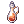 Berserk Potion to an Ally to temporarily increase it's ASPD(Attack Speed).
A Soul Linker Class needs to connect your soul to the Greatest |
 Twilight Pharmacy I Twilight Pharmacy I
|
1 | These Skills allows you to create 200 White Potion with I,  200 Condensed White Potion with II and 200 Condensed White Potion with II and  100 Alcohol, 50 Bottle Grenade and 50 Acid Bottle with III at once. 100 Alcohol, 50 Bottle Grenade and 50 Acid Bottle with III at once.
A Soul Linker Class needs to connect your soul to the Greatest These Skills are technically useless because NovaRO has a feature that allows the Alchemist Class to brew all available ingredients of a selected Item in one cast of |


Supportive
| Skill | Max Level | Notes |
|---|---|---|
 Potion Pitcher Potion Pitcher
|
5 | This Skill allows you to throw a Potion on an Ally to restore HP at level 1, 2, 3, 4 and restore SP at level 5.
Each Level consumes a different type of Potion. If your soul is linked to the Greatest |
 Chemical Protection Weapon Chemical Protection Weapon
|
5 | Imbue the target's Weapon, Shield, Armor or Helm with a  Glistening Coat that reinforces the target's equipment, making it Unbreakable for the duration. Glistening Coat that reinforces the target's equipment, making it Unbreakable for the duration.
This also protects the target from being affected by these following Rogue Skills: These skills on themselves are pretty good but they use a |


Passive
| Skill | Max Level | Notes |
|---|---|---|
 Axe Mastery Axe Mastery
|
10 | This Skill increases your damage when wielding an Axe or a One-Handed Sword.
This skill is usually useless as your main Weapon will most likely be a Mace such as |
 Learning Potion Learning Potion
|
10 | This Skill increases both effectiveness of potions and your success rate when using Pharmacy
|
| Bioethics | 1 | This Skill allows you to learn the Homunculus Skill Tree. |
Biochemist Skill Tree
Offensive
| Skill | Max Level | Notes |
|---|---|---|
| Acid Demonstration | 10 | Fling a Bottle Grenade and a Acid Bottle to the target that cause up to 10 chemical explosions that deals great damage on high VIT stat targets.
This Skill can also break your target's Weapon and Armor by a slim chance. This Skill is basically your best damaging Skill when killing targets with high VIT stat, usually MVPs. |
Active
| Skill | Max Level | Notes |
|---|---|---|
 Plant Cultivation Plant Cultivation
|
2 | Plant either a  Mushroom Spore or a Mushroom Spore or a  Stem on the targeted ground to grow a Mushroom or a Plant. Stem on the targeted ground to grow a Mushroom or a Plant.
Each Level of this Skill grows different types of Mushrooms or Plants.
I don't recommend learning this skill as farming Mushrooms and Plants aren't a viable strategy to acquire Item ingredients anymore. |


Supportive
| Skill | Max Level | Notes |
|---|---|---|
 Slim Potion Pitcher Slim Potion Pitcher
|
10 | Pour the content of a Condensed Potion in a target area to restore HP of affected Allies.
At Level 1 to 5, it consumes a I don't recommend this skill if you're going with a full DPS build, it will just waste your precious Skill Points to allocate. This Skill doesn't see too much use in large Parties because they tend to always have at least Arch Bishop which takes care of restoring the Party Member's Health, but you can use it in conjunction with the Party's Healer if they are occupied with something else or just doesn't have enough healing power. |
 Full Chemical Protection Full Chemical Protection
|
5 | Imbue the target's Weapon, Shield, Armor or Helm with a Glistening Coat that reinforces the target's equipment, making it Unbreakable for the duration.
This Skill also protects the target from being a victim of Stalker's |

Passive
The Biochemist Skill Tree has no Passive Skills.
Geneticist Skill Tree
Offensive
| Skill | Max Level | Notes |
|---|---|---|
 Cart Tornado Cart Tornado
|
5 | Spin your Cart around to deal damage and Knocks Backs enemies hit.
The damage can be improved by leveling |
| Cart Cannon
|
5 | Fire Cannon Balls from your Cart to the Target and deal Ranged damage.
The damage's Property is only affected by the Property of your Cannon Ball.
The Different Property Cannon Balls are: Cannon Ball(Neutral Property), Holy Cannon Ball(Holy Property), |
 Illusion Dopping Illusion Dopping
|
5 | Splash Alcohol all around that decrease the HIT of all affected Enemies while also flipping their screen upside down.
This Skill is useless in PvM. |


Active
| Skill | Max Level | Notes |
|---|---|---|
 Thorn Trap Thorn Trap
|
5 | Plant a  Thorn Plant Seed on the targeted ground to grow a Carpet of Thorns that stays on the ground for a duration. Thorn Plant Seed on the targeted ground to grow a Carpet of Thorns that stays on the ground for a duration.
These Carpet of Thorns acts similarly to Hunter's Any kind of Fire Property damage that the snared Target receives will free him from the trap. 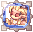 Sera's |
 Blood Sucker Blood Sucker
|
5 | Attaches a Blood Sucker Plant Seed onto a Target that will continuously Drain it's HP.
You can only attach 3 Blood Suckers at a time and will fall off if you're too far from the Target. This Skill is generally useless as you must always have Health Recovery Consumables in your inventory. I don't recommend learning nor using this Skill. |
 Spore Explosion Spore Explosion
|
5 | Spread  Bomb Mushroom Spore onto a Target and detonates after a delay dealing damage, the damage also takes account of your Weapon Property. Bomb Mushroom Spore onto a Target and detonates after a delay dealing damage, the damage also takes account of your Weapon Property.
This Skill is useless, because there is no point on waiting so much time to deal damage and also the damage is mediocre. |
 Wall of Thorns Wall of Thorns
|
5 | Plant a Thorn Plant Seed around an Allied Target to grow a Thorny Wall that stays on the ground for a duration.
The Thorny Wall will damage and Knock backs all enemies hit while it exists, making it a better spacing tool rather than If the Thorny Wall is hit by any kind of Fire Property damage, it will burn, transforming it into a |
 Crazy Weed Crazy Weed
|
10 | Plant a Thorn Plant Seed on the targeted ground to grow several Garden Keeper on the ground dealing damage and removing any kind of Trap Skills and Ground Effects that lays on the targeted area.
This Skill is particularly useful to remove Ground Effects such as Acolyte's |
 Demonic Fire Demonic Fire
|
5 | Throw a Bottle Grenade on the ground to set it on fire. The Fire remains on the ground for a duration and deals Fire Property Magic damage.
This Skill is supposed to be used with 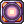 Fire Expansion different levels to change it's Effects. |
| Fire Expansion | 5 | When this skill is used on a Demonic Fire, depending on the Level, the Demonic Fire will change Effects.
Each Level of this Skill consumes a different Item and Changes
It will always cast the Highest Level of Acid Demonstration learned. If Acid Demonstration isn't learned, it will cast at Level 5 instead. |
 Hell's Plant Hell's Plant
|
5 | Open a Plant Bottle to unleash a Hell Plant that stays on the ground for a duration and disappears after dealing damage to enemies that walks on it. It can also Stun.
Each Level on This Skill doesn't see too much use in PvM as you would normally just want to kite Monsters and kill them as fast as possible. I don't recommend learning this Skill. |
 Howling Mandragora Howling Mandragora
|
5 | Pull out a Mandragora from a  Mandragora Flowerpot to cause it to wail loudly in an area around you. Mandragora Flowerpot to cause it to wail loudly in an area around you.
This Skill decreases all affected enemies INT Stat and SP as well as increasing Skill Delay. This Skill is useless in PvM. I don't recommend using this Skill. |
 Sling Item Sling Item
|
1 | This Skill allows you to throw Items that are classified as Throwing Items to your Target.
This Skill is useless in PvM as the Items that you can throw are generally Bomb Fruits like Banana Bomb which forces Damaged Players with this to Sit. You can also throw them new type of Potions like Enriched White Potion Z Throw or even +20 Foods like This Skill is generally useless in PvM. |
 Change Material Change Material
|
1 | This Skill allows you to convert a precise set and ratio of materials into others.
You generally will be using this only to convert You can find the full recipes by clicking on the Skill's Name. |
 Mixed Cooking Mixed Cooking
|
2 | This Skill allows you to create +20 Stats Foods such as Warg Blood Cocktail.
At Level 1 you can create foods by 1. At Level 2 you can create foods by 10, and if you have enough success rate, you can have 12 Foods with ingredients that should be only enough for 10. The Full Recipes will be available on my Item Creation Section. |
 Bomb Creation Bomb Creation
|
2 | This skill allows you to create different type of Fruit Bombs which have different effects depending on the fruit.
This skill is useless in PvM. |
 Special Pharmacy Special Pharmacy
|
10 | This Skill allows you to create a set of New type of Potions.
The Full Recipes will be available on my Item Creation Section. |


Supportive
| Skill | Max Level | Notes |
|---|---|---|
 Cart Boost Cart Boost
|
5 | This Skill gives you a Movement Speed +100% and ATK +50 Buff at Max Level when active.
The great Movement Speed Buff increases your survivability because it eases your ability to Kite Monsters while also giving a boost in your damage. I recommend having this Buff on at all times. |
 Full Throttle Full Throttle
|
5 | This Skill enables you to enter Super Saiyan mode for a duration, gaining +20% All Stats with an Increased Movement Speed as well as fully restoring your HP.
The downside is that your SP is drained periodically and you'll gain the "Rebound" status after it's duration. Rebound will disable your HP and SP recovery rate while also slowing your Movement Speed for a moment. I don't personally use this Skill as often as people would think simply because of the "Rebound" Status except if you really want to have that last Strength Push to kill an MvP. |
Passive
| Skill | Max Level | Notes |
|---|---|---|
 Sword Training Sword Training
|
5 | This Skill increases your ATK and Accuracy when wielding a One-Handed Sword or Dagger.
This skill is usually useless as your main Weapon will most likely be a Mace such as |
 Cart Remodeling Cart Remodeling
|
5 | This Skill adds Accuracy to your Cart Related Skills and also expands the Weight Capacity of your Cart.
This is a must have skill as your main damage source will come from |
Builds and Gameplay
General PvM
The general playstyle of a Genetic in the PvM environment is to use Cart Boost then Loud Exclamation to cancel the Animation Lock of it, and just spam Cart Cannon.
When you will face MvPs , you will most likely want to use Acid Demonstration as they tend to have a lot of VIT resulting to more damage, but if your Acid Demonstration damage isn't 4 Times better than the damage of your Cart Cannon, just keep using Cart Cannon.
Sometimes you will also have to use Crazy Weed to clear out  Pneuma to keep dealing damage to your enemies.
Pneuma to keep dealing damage to your enemies.
In terms of Stats, you will want to stack as much INT and ATK as possible to deal tons of damage.
One of your goals is to also reach Instant Cast which can be achieved with this formula (DEX*2)+INT= 530. Ideally, with enough gears, you should replace your DEX gears/cards with INT gears/cards because that's what matters, DEX is less important as it just impacts your Casting Time.
Stats Suggestions
Standard Status Build
- STR: 90
- AGI:
- VIT: 94 (100 with Job Bonuses)
- INT: 120
- DEX: 120
- LUK: 25
This build is designed to have both Damage and Survivability.
STR is needed to have some base ATK for your Damage, also if if you have a  Heroic Backpack [1], having 90 STR is enough to benefit one it's effect.
Heroic Backpack [1], having 90 STR is enough to benefit one it's effect.
AGI isn't really needed because of most the time you will be able to one shot most of the normal Monsters, it's also better if you focus on Stats that reduces your Cast Time as well as doing more Damage.
Having AGI is worth it if you're close to Instant Cast to be able to spam Cart Cannon like a gatling gun.
VIT Stat is to increase your HP Pool as well as DEF.
INT is your main Damage Stat, each point directly Increases your Cart Cannon Damage. The MATK it provides also contributes to Acid Demonstration. It also contributes to reach Instant Cast
DEX is needed to reach Instant Cast as it counts Twice. It also add ASPD making you spam Skills a little bit Faster.
LUK is mainly added if you have any leftover Status Points, it increases your Damage overall.
Status Builds with Homunculus
Click on [Expand] to reveal each Status Builds with Different Homunculus.Depending on the Homunculus that you have, you might want to change your Status Build to adapt on what your Homunculus can offer in terms of buffs.
Please note that these Status Builds are highly suggestive, you can have any Homunculus paired with any Status Builds, I'm not here to impose you how to play, I'm just explaining you my choices.
| Homunculus | Status Build | Notes |
|---|---|---|
| 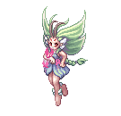 |
|
I only put 91 points on VIT but you need to have 100 VIT in total with your gears to have some Status Effects Immunity. With This is enough ASPD to make you to be able to use your She also have You can use You can also head to my Artificial Intelligence Section to learn how to make your |
| Homunculus | Status Build | Notes |
|---|---|---|

|
|
I chose to not put any point on VIT because when I have Feel free to put enough VIT to reach 100 VIT if you're going to face a Monster that you can't kill in One or Three shots to avoid getting killed by it and to also Resist some Status Effects. |

| Homunculus | Status Build | Notes |
|---|---|---|
| 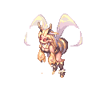 |
|
Having a Sera will enable you to have the Her If you're just going to do the job of Lurer/Tanker, then 101 INT should be enough as your main job is to tank and not deal Damage. |

| Homunculus | Status Build | Notes |
|---|---|---|

|
|
With the Homunculus Update, If you're planning your |
| Homunculus | Status Build | Notes |
|---|---|---|

|
|
Just let |

Skills Suggestions
Skill Tree

Used Skills
| Main Skills | Skill Rank | Use |
|---|---|---|
| Cart Cannon
|
This will be your main Skill to kill every monsters.
This Damage Formula is:
In other words, this formula means that the higher your INT Stat, ATK and Just a reminder, the Element of your
The Different Property Cannon Balls are:
You can buy Cannon Balls from Mado Dealer in Prontera Town, | |
| Acid Demonstration | Use this skill to kill High VIT Targets which are more likely gonna be MVPs.
The Element of the Damage is Forced Neutral, meaning that no matter what happens, it will always deal Neutral Property Damage. The Damage Formula is:
It's also important to note that Acid Demonstration has a 1 Second Fixed Cast Time meaning that even if you reach Instant Cast, you won't able to totally Cast it Instantly without the help of some gears. Reminder: Baby Geneticists and Non-Transcended Genetics doesn't have access to Acid Demonstration. | |
| Cart Boost
|
You must always have this Buff no matter what, it increases both your Movement Speed and the Damage of your Cart Cannon.
| |
| Loud Exclamation
|
Like, Cart Boost, you must always have this buff, it's basically a free +4 STR.
| |
| Extra Skills | Skill Rank | Use |
| Call Homunculus
|
Always have your Homunculus assist you.
Their Buffs are meant to be used by you to increase your efficiency in battle. | |
| Potion Pitcher Lv 4
|
This allows you to Restore HP or SP to Yourself or Allies if you don't have a Healer in your Party or if you're Soloing/Farming. | |
| Slim Potion Pitcher
|
Use this Skill only if your Healer is dead and your Party badly needs AoE Healing. | |
| Thorn Trap
|
I only use this Skill in Instances because Monsters and MVPs inside aren't able to  Teleport' when Snared. Teleport' when Snared.
But you can also take advantage that some Monsters uses | |
| Thorn Wall
|
Use this skill on Yourself or an Ally if there are too much Monsters on you/them, this Knocks-Back monsters away from the wall.
This is very useful if you gathered too much Monsters than you can handle, this saved my life so much times. | |
| Crazy Weed
|
I only use this skill to remove Pneuma which blocks every Ranged Attacks such as Cart Cannon.
| |
| Full Chemical Protection
|
This Skill should be used only if you know that the Monster that you're fighting will break your Armor or uses a a Strip kind Skill like Rogue's  Strip Armor. Strip Armor.
I highly recommend you to Research your Monsters before fighting them unprepared. In case of doubt, always use this when you're fighting an MVP/Strong Monster on your Tank or Yourself. |
Click on [Expand] to reveal the Homunculus Skills and Consumables.
| Homunculus Skills | Homunculus | Use |
|---|---|---|
 Overed Boost Overed Boost
|
Use this Skill only when you're Killing High HP Monsters like MVPs because you will most likely need to spam Cart Cannon and also do it if you're standing on Bard's  Poem of Bragi to be able to spam it rapidly as it eliminates the After Cast Delay. Poem of Bragi to be able to spam it rapidly as it eliminates the After Cast Delay.
You also have to keep in mind that after the Duration of the Buff, it will drain 50% of your SP, so you need to either ask a {Skill List |id=374 |skill=Soul Change |simple=yes}} from your Sorcerer or just bring SP Restorative Consumables. | |
 Silent Breeze Silent Breeze
|
This Skill can be used to restore your HP and also cure some Status Effects.
I find this particularly useful to remove the Status Effect Hallucination when you're farming in Gefenia for example. | |
| Pyroclastic
|
Use this Skill to boost your Damage.
| |
 Pain Killer Pain Killer
|
I generally use this skill when farming as it allows me to receive very very little Damage.
This makes your farming experience much more comfortable and also allows you to not carry any extra Consumables which just add Weight. | |
 Needle of Paralyze Needle of Paralyze
|
This Skill is an alternative to Thorn Trap but it doesn't work on Boss Monsters.
| |
 Stein Wand Stein Wand
|
This Skill can be used to protect Yourself and your  Safety Wall. Safety Wall.
This can be used when you have gathered too much Monsters than you can handle much like | |
| Consumables | Way to Obtain | Use |
| 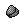 Fly Wing | This item is a staple consumable when you're farming or just navigating.
It allows you to | |
| White Potion | Always have this item in your Inventory to be able to use Potion Pitcher Lv 4.
| |
| Condensed White Potion
|
Using this Item on it's own is generally better than using it for Slim Potion Pitcher because you will be able to Restore a Good Amount of HP without having to stay put and use a skill.
| |
| Mora Mandarin | Dropped by Pom Spider
|
While very expensive, this is a good Item to restore SP.
This Item can also be efficiently farmed on Gramps 145+ Rotation that contains Pom Spider. |
| Grape Juice | This is a cheap Item that can be used to restore SP. | |
| Box of Panting | This Item restores 9% of your SP when consumed, this is particularly useful when Overed Boost Buff ends.
And is available all time around and for free, as long as you have a | |
| 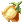 Yggdrasil Berry | Dropped by Monsters
|
Always bring at least 5 of this Item whenever you're going in an Instance.
This Item fully restores your HP and SP upon consumption. |
 Yggdrasil Seed Yggdrasil Seed
|
Dropped by Monsters
|
If you happen to have some of this in your Storage, always bring some, it restores 50% of your HP and SP. |
 Yggdrasil Leaf Yggdrasil Leaf
|
Dropped by Monsters
|
ALWAYS BRING AT LEAST 10 OF THIS ITEM TO BE ABLE TO RESURRECT ANYONE WHO DIES IN AN INSTANCE AND MORE IMPORTANTLY BE ABLE TO RESURRECT YOUR DEAD ARCH BISHOP |
 Shiny Marinade Beef Shiny Marinade Beef
|
Dropped by Payon Soldier in Sara's Memory Instance.
|
Always farm these Foods in Sara's Memory Instance, it's easy enough to complete and you can have these Foods that gives +6 Stats. |
 Concentration Potion Concentration Potion
|
You can use all these 3 Items at once to increase your ASPD, thus enabling a faster Cart Cannon Spam.
| |
 Enriched Celermine Juice Enriched Celermine Juice
|
These items further increases your ASPD. | |
 Guarana Candy Guarana Candy
|
Can be bought from Candy Maker in Brasilis after completing the Guarana Quest.
| |
 Box of Resentment Box of Resentment
|
These items further increases your ATK. | |
 Aloevera Aloevera
|
Dropped by Monsters
| |
 Anodyne Anodyne
|
Dropped by Monsters
|
This Item allows you to have the  Endure effect which enables you to still walk while taking Damage as long as you the Buff is active. Endure effect which enables you to still walk while taking Damage as long as you the Buff is active.
This is useful when you're trying to gather monsters, it makes you not "Flinch" when taking damage, thus making the monster gathering smoother. |


Equipment Suggestions
Early Game Equipment
| Item | Type | Way to Obtain | Notes |
|---|---|---|---|
| Eden Gears | Equipment Set | Eden Headquarters | The Eden Gears are good enough to be kept until you can switch on a higher end Gears usually around Level 120. |
 Ship Captain Hat [1] Ship Captain Hat [1]
|
Upper Headgear | Nova Shop | If you're starting out, I would highly recommend you to farm enough Zeny and get yourself this hat. |
| Jewel Crown | Dropped by Monsters | This headgear gives INT+2 and LUK+1 and can also be bought from Players for a cheap price. | |
 Apple of Archer Apple of Archer
|
Dropped by Monsters | If you want to cast faster, take this headgear as it gives you DEX+3 and can also be bought from Players for a cheap price. | |
 Gangster Scarf Gangster Scarf
|
Lower Headgear | Headgear Quest | This headgear is really not a priority, but if you happen to have one, equip it as it gives ATK+5.
You can also ignore this item. |
 Orlean's Gown [1] Orlean's Gown [1]
|
Armor | Dropped by Monsters | This armor allows you to make your casts uninterruptible making your Cart Cannon or even Acid Demonstration always hit your target.
|
 Crimson Mace [2] Crimson Mace [2]
|
Weapon - Mace | Dropped by Monsters | I would highly suggest you to get this Weapon as early as possible because they are easy to farm and also try to refine it to +15 as this will also be your main End-Game Weapon.
The Element of the weapon doesn't matter as The ATK that it has at +15 is just too important to be ignored. |
 Thanatos Hammer [1] Thanatos Hammer [1]
|
Ghost Palace | If you're struggling having a Crimson Mace [2], get this Weapon instead, it gives INT+6 and VIT+6 which further increases your Damage as well as your HP.
This Weapon also helps for your Survivability and SP problems as it has a 5% HP and SP Leeching effect with a 5% chance. The most interesting part about this Weapon is that it can be enchanted. | |
| 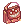 Red Square Bag [2] | Dropped by Mistress | If you happen to have any of these Weapons, you can equip them in the meantime if you have not any other weapons.
They have a pretty decent ATK, you can also try to refine them to have a higher ATK, don't be afraid to over refine them, if they break it's okay, you won't be using this in late game anyways, and if you managed to have a high refine, you can always try to sell them to players and have a good chunk of Zeny. They are also Malangdo Enchantable. | |
| Erde [2] | Dropped by Orc Lord | ||
 Hurricane Fury [1] Hurricane Fury [1]
|
Weapon - Two-Handed Axe | Dropped by Monsters | Equip any of these Weapons if you happen to have them, these are just filler Weapons. |
 Doom Slayer [1] Doom Slayer [1]
|
Dropped by Orc Lord | ||
| Bloody Axe | |||
| Bradium Shield [1] | Shield | Dropped by Monsters | Get any of these shields to have some DEF to be able to resist some Damage.
The Bradium Shield [1] gives more defensive Stats than Round Buckler [1], but the latter is easier to farm. |
| Round Buckler [1] | Dropped by Monsters | ||
 Giant Snake Skin [1] Giant Snake Skin [1]
|
Garment | Different Giant Snake Skins are acquired in Faceworm Nest | This Garment is the best you can get on early levels as it provides various bonus Stats, it's a very popular item and can be found all over the Market.
This is also an End Game Item as it's the only Garment that can give up to INT+17, but it's very rare, if you can fetch a INT+14 it's already very very good. In any case, at the beginning you can try to buy some |
 Variant Shoes Variant Shoes
|
Footgear | Dropped by Beelzebub | Equip this Footgear if you have access to it, it increases both your MaxHP and MaxSP by 20%.
This is a very good Beginner's Footgear that can be bought for a moderate price. |
 Orlean's Glove [1] Orlean's Glove [1]
|
Accessory | Dropped by Bow Master | This Accessory helps you to have a faster casting time thanks to the DEX+2 and can also be comboed with a 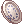 Orleans's Server [1] to reduce your casting time by an additional 10%. |
 Spiritual Ring Spiritual Ring
|
Dropped by Monsters | If you have this item lying in your storage, equip it, it gives a neat INT+2 and DEX+1. |
End Game Equipment
| Item | Type | Way to Obtain | Notes |
|---|---|---|---|
 Old Midas Whisper [1] Old Midas Whisper [1]
|
Upper Headgear | Tomb of the Fallen | This is easily the best hat to greatly improve the Damage of your Cart Cannon.
For every 2 Refines of this Headgear, it Increases your The other best part is that if you manage to get the Rare Enchant |
 Amistr Beret [1] Amistr Beret [1]
|
Master of Coin | This hat is kind of a slightly weaker version of Old Midas Whisper [1].
Every 2 Refines of this headgear increases your ATK and MATK by 10. The interesting part here is that if you pair it with a To make it worth, you'll need at least a +14 | |
 Evil Marching Hat [1] Evil Marching Hat [1]
|
Nova Shop | This Headgear only shines when it is +9, it will give you +5% ATK to all Monsters and also +5% Range Damage.
Even though the Stats that it gives seems very good, I would highly suggest you to just try and get a | |
 Ancient Golden Ornament [1] Ancient Golden Ornament [1]
|
Biolab Gear Exchange | You might want to use this hat for the All Stats+2, this enables you to get closer to Instant Cast.
It also gives a solid ATK+8%. | |
 Black Frame Glasses [1] Black Frame Glasses [1]
|
Middle Headgear | Use a  Spiritual Auger on a Black Frame Glasses to give it a Slot. Spiritual Auger on a Black Frame Glasses to give it a Slot.
Both items are in the Nova Shop |
This is the only Mid Headgear that gives INT and is slotted. |
 Scarlet Rose Scarlet Rose
|
Lower Headgear |  Valentine's Day Pack from Nova Shop Valentine's Day Pack from Nova Shop
|
This Lower Headgear slightly gives more damage for Acid Demonstration compared to  Rainbow Scarf. Rainbow Scarf.
|
| Rainbow Scarf
|
Nova Shop | This is the only Lower Headgear that gives INT
Get this for extra damage. | |
 Well-Chewed Pencil Well-Chewed Pencil
|
This is the only Lower Headgear that gives DEX
Get this if you think that you need to cast faster. | ||
 Flattery Robe [1] Flattery Robe [1]
|
Armor | Honor Token Exchange | On it's own, this Armor gives MATK+150 when your Base Level is 140 or higher, this only boosts your Acid Demonstration.
To make this Armor worth, it must be refined to at least +7 and must also be enchanted with either Spell Bound Nive for more Damage or This also allows you to use |
 Excellion Suit[1] Excellion Suit[1]
|
Verus Equipment Exchange | On it's own, this Armor gives VIT+10 when your Base Level is 130 or higher and an additional MaxHP+4% for every 3 Refine Levels, this greatly increases your survivability.
To make this Armor worth, it must be refined to at least +7 and must also be enchanted with exactly You should only have these 3 exact enchants that boosts ATK to enhance the Damage of | |
 Hero Trade Mail [1] Hero Trade Mail [1]
|
Prize of Hero from Bios Island and Morse Cave | If you're having trouble reaching Instant Cast, this Armor can help you with that as it gives +1 Stat for any Stats that is 90 or higher every 2 Refine Levels.
This Armor starts to be really worth it at +6 although +4 is somewhat good. You should swap this Armor into anything mentioned above as soon as you get closer to the Instant Cast because it doesn't provide a lot of Damage Boost. You can still keep it for Brewing Purposes. | |
| Crimson Mace [2]
|
Weapon - Mace | Dropped by Monsters | This Weapon needs to be at +15 to unlock it's full potential.
If you're Level 175 at +15 you can have up to ATK+430. There is no reason for you to not have this, it is easily farmed, you don't have to care about the Weapon's Element. I highly recommend you to have this as soon as possible, and is also the Highest in the priority list of gears that you should have. |
 Vicious Mind Mace [1] Vicious Mind Mace [1]
|
Dropped by Immortal Zombie Assault in Sky Fortress | This Weapon has the same refining effect bonus of Crimson Mace [2] in addition of having 3 random properties.
This can potentially out-damage | |
| 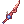 Twin Edge of Naght Sieger [3] | Weapon - One-Handed Sword | Dropped by Naght Sieger | These Swords can out damage a +15 Crimson Mace [2] by a fair amount but is more complicated to have than a Crimson Mace [2].
To do that, they have to be at least +15 and enchanted with a You will also need to have You will generally want to have the Red Sword because it has 10 more ATK than the Blue Sword. However, the Blue Sword can be paired with |
 Twin Edge of Naght Sieger [3] Twin Edge of Naght Sieger [3]
| |||
 Mad Bunny [1] Mad Bunny [1]
|
Shield | Nova Shop | By itself, it gives ATK+5% and MATK+5%, but this truly shines at +9 where it gives you a total of ATK+20 and MATK+20 plus the previous bonuses.
This is the only very Offensive Shield in this server for the reason that it only boosts up your Damage and gives 0 DEF, so be careful to let your tank do the tanking in parties or bring more potions when soloing. |
 Immune Shield [1] Immune Shield [1]
|
Retired Hunter Shop | This shield needs to be at least +9 to be good.
| |
 Valkyrja's Shield [1] Valkyrja's Shield [1]
|
Dropped by Valkyrie | This shields gives a 20% Resistance to Water, Fire, Undead and Shadow Properties, this is a very good shield if you're in combat with those elements. | |
| Heroic Backpack [1]
|
Garment | Retired Hunter Shop | Only equip this Garment if it's +9 as you will most likely do more Damage in contrary of Giant Snake Skin [1].
But the drawback is you don't get anyBonus Stats Points, but that can be easily covered by a +20 Int Food/+20 Dex Food. You basically want to have this when you're in Instances for example because you will always have a big Party with Arch Bishops and Minstrels and they can reduce down your Casting Time enough to be quick, and use |
| Giant Snake Skin [1]
|
Different Giant Snake Skins are acquired in Faceworm Nest | This is the only Garment that can give up to INT+17 which is considered a Perfect INT but it's very rare, if you can fetch an INT+14 it's already very very good.
I usually put this Garment when I'm Farming or when I am not able to reach Instant Cast even with Arc Bishop Buffs. | |
 Temporal Boots of Dexeterity [1] Temporal Boots of Dexeterity [1]
|
Footgear | Temporal Boots crafting materials can be obtained in Old Glast Heim | This Footgear will give you DEX+3 for every 3 Refine Level, this is already very good at +4 but of course it's better at +9.
The most interesting part is that it will make you able to fast cast Acid Demonstration by cutting down 0,5sec of Fixed Cast Time of it's 1sec Cast Time if you have 120 DEX or higher. For an optimal use, this should be enchanted with:
The You can also use some Magic Scrolls such as Level 5 Fire Wall or But overall |
 Pendant of Maelstrom [1] Pendant of Maelstrom [1]
|
Accessory | Rewards of the Nightmarish Jitterbug | This Accessory gives ATK+6% and MATK+6% which is great because both of it increases the damage of Acid Demonstration and the ATK portion increases Cart Cannon.
It also gives All Stats+1 which is good to get closer to Instant Cast. |
 Broken Chip 1 [1] Broken Chip 1 [1]
|
Rewards of the Last Room | These Accessories must be used together to proc the bonus effect of INT+8 and STR+8.
This is an obvious choice if you need a big INT boost to get close to Instant Cast while also boosting up your Damage. | |
 Physical Enhancer Ring [1] Physical Enhancer Ring [1]
|
Rewards of the Geffen Magic Tournament | On it's own it only gives ATK+5%, but unless you have it enchanted with 2 ATK+3% which is very rare, it's better to get Pendant of Maelstrom [1] which is a more reliable source of Damage.
|


Cards Suggestions
To be honest, I only put Essence of Evil INT3 in everything except when there is a better card option. This little gem is just way too good because it gives INT+4, MATK+12 and unfortunately STR-4. This boosts your Damage while also making you closer to Instant Cast.
| Card | Card Slot | Card Effect | Notes |
|---|---|---|---|
| Essence of Evil INT3 | Any Slots | Adds INT+4. MATK+12. STR-4. | This little gem can be put in any open slot possible.
It can be obtained as a completion reward of the Temple of the Demon God Instance. Equip this one if you are in need of more Damage. |
 Essence of Evil DEX3 Essence of Evil DEX3
|
Adds DEX+4. HIT+8. LUK-4. | This little gem can be put in any open slot possible.
It can be obtained as a completion reward of the Temple of the Demon God Instance. Equip this one if you want a Quicker Casting time. | |
| Headgear | Adds INT+2. | Additional INT for more extra damage. | |
| Adds DEX+2. | Additional DEX for Faster Casting Time. | ||
| Adds ATK+10. | Additional ATK for more base damage. | ||
| Armor | Adds ATK+25. | Additional ATK for more base damage. | |
| Adds INT+1. Enchant Armor with Undead Property. | Additional INT for more extra damage.
By enchanting your armor with Undead Property, you gain resistance to Poison and Shadow properties and you're immune to Freeze and Stone Curse statuses. However, you won't be able to be healed by | ||
| Every 18 Base STR, you gain 1 INT. | A Card that let you gain more INT based on your STR.
At 90 STR you get 5 INT, this is good to get closer to Instant Cast. | ||
| Weapon | Adds ATK+15. 20% additional damage to medium and large size monsters. |
You can combine it with The card effect and the card set combo of this one is so good that you don't want anything else, it boosts your damage on medium and large monsters which is very good because most of the time, the monsters that you will kill are either medium or large. | |
| Increase damage with ranged attacks by 10%. | Works for both Cart Cannon damage and | ||
| Shield | Adds DEF+20. Damage taken from medium and large size monsters -25%. |
You can combine it with See Old Glast Heim Instance.. This card is basically a better version of the | |
| Reduces damage from Small, Mid, and Large size monsters by 15%. | A staple card for general usage. | ||
| Garment | Physical Ranged Attack +1% for every 10 Base DEX. | Really nice card for additional damage.
I usually use this card for general usage because you always want additional damage in most cases. | |
| Increase Resistance to Neutral Property attacks by 20%. | Really nice card for additional resistance.
Use this card if your goal is to not die or support your party instead of dealing damage, it also gives you extra survivability if you're fighting against a monster that uses heavy AoE damage spells such as Hell's Judgement or Earthquake. | ||
| Footgear | ATK +3%, Ranged Physical Damage +5%. | This Card boosts your Damage greatly without any drawback. | |
| ATK +1%, MATK +1%, MaxHP -2%.
Every 2 Refine Level on the Footgear, adds ATK +1%, MATK +1% and MaxHP -2%. |
This Card can potentially boosts your Damage in exchange of MaxHP when refined. | ||
| Accessory | Adds ATK+20, MHP -1%. | Expensive Card that boosts your damage on both Cart Cannon and | |
| Adds DEX+3. | A staple card that makes you cast faster if you have trouble. | ||
| Makes your skill casting un-interruptable. | Put this card in your accessory if you don't have a lot of DEX for now and you are mobbing a lot. |
Shadow Gear Suggestions
Click on [Expand] to reveal the Shadow Gear Suggestions.
Shadow Gears are obtained in Monster Hunter by killing a specific MvP and using the loots to forge these.
These gears goes into your costume equips meaning that it won't replace your main equips.
| MVP | Shadow Gear Set | Total Materials Required | Effects and Notes |
|---|---|---|---|
Domovoi |
If you complete the Mystic Set, you'll have INT+5 and MATK+5.
Take this set if you want more Damage with | ||
Celestial Tendrillion |
If you complete the Cunning Set, you'll have DEX+5 and Cast Time -5%.
Take this if you want a Faster Casting Time. |


Cute Pet Suggestions
Click on [Expand] to reveal the Cute Pet Suggestions.
These are the different Cute Pets that I would suggest using, feel free to use any, even tho the most useful are the first three.
| Pet | Way to Obtain | Food | Effects when Loyal |
|---|---|---|---|
| 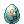 Random Pet Egg from Nova Shop | Unknown |
| |
 Abracadabra Abracadabra
|
 Fine-grained Trunk Fine-grained Trunk
|
| |
| Girl's Naivety |  Yellow Vital Flower Yellow Vital Flower
|
| |
 Girl Doll Girl Doll
|
Well-ripened Strawberry |
| |
| Well-Dried Bone |  Pet Food Pet Food
|
| |
| No Recipient | Pet Food
|
| |
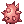 Poison Spore Egg |
 Deadly Noxious Herb Deadly Noxious Herb
|
Pet Food
|
|
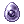 Sohee Egg |
Silver Knife of Chastity | Pet Food
|
|
 Orc Warrior Pet Evolution Orc Warrior Pet Evolution
Random Pet Egg from Nova Shop |
Pet Food
|
| |
| 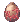 Deviruchi Pet Evolution | Pet Food
|
| |
 Yoyo Pet Evolution Yoyo Pet Evolution
|
Pet Food
|
|


Farming
Farming is all about getting Zeny and saving Zeny.
To be able to farm efficiently you will have to get yourself some specific equipment that can be found below.
I would recommend you to first invest into a Green Operation Coat [1] to at least cover the Acid Demonstration requirements which is an important Skill.
Farming Efficiently
Farming in Ragnarok requires you to know what monsters drops the item that you desire as well as the location of those monsters.
Luckily in NovaRO, we have access to various commands:
- @ii (@iteminfo), allows you to search information about an item, for example : @ii unripe apple or @ii 619.
- @wd (@whodrops), allows you to search what monsters drop a specific item, for example: @wd unripe apple or @wd 619.
- @wi (@whereis), allows you to know the location of a monster, for example: @wi poring or @wi 1002.
- /navi - @navi - @navi2, allows you to reach a map by guidance, for example: @navi2 prt_fild08 or @navi prt_fild08.
Besides these in-game commands, you can also use database sites such as divine-pride.net or ratemyserver.net. Divine Pride is more updated and more accurate than Ratemyserver, but the difference is that in Ratemyserver you can actually view a detailed world map and see exactly where you want to go.
Click on [Expand] to reveal these Commands in action.


Click on [Expand] to reveal the Farming Places.
| Pharmacy
| ||||
|---|---|---|---|---|
| Monsters and Drops | Map Access | |||
| Goat #1372 | Aldebaran Town (aldebaran) | Border Posts (yuno_fild01) | Border Checkpoint (yuno_fild12) | Yuno Field (yuno_fild11) |
|
Lv. 80 HP: 3 890 Brute, Fire 3, Medium
|

|

|

|

|
| Starting Point from Warper NPC: Aldebaran (Town)
Destination: Yuno Field (Field) |
@navi2 aldebaran 140/244 | @navi2 yuno_fild01 26/246 | @navi2 yuno_fild12 24/225 | @navi2 yuno_fild11 326/207 |
| Petite #1155 | Glast Heim (glast_01) | Geffen Field (gef_fild06) | ||
|
Lv. 86 HP: 5 799 Dragon, Earth 1, Medium  White Herb(100%) White Herb(100%)  Rough Oridecon (14%) Rough Oridecon (14%)
Petite's Tail(4%)
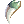 Dragon Canine(100%) |

|

| ||
| Starting Point from Warper NPC: Glast Heim Entrance (Dungeon)
Destination: Geffen Field (Field) |
@navi2 glast_01 377/304 | @navi2 gef_fild06 38/304 | ||
| Bathory #1102 | Clock Tower F1 (c_tower1) | Clock Tower F2 (c_tower2) | Clock Tower B3 (alde_dun03) | Clock Tower B4 (alde_dun04) |
Lv. 86 HP: 5 242 Demi Human, Shadow 1, Medium
|

|

|

|

|
| Starting Point from Warper NPC: Clock Tower (Dungeon)
Destination: Clock Tower B4 (Dungeon) Note: You need to have Key of Underground (Dropped by Clock Tower Manager) in your inventory to enter the 4th Map. |
@navi2 c_tower1 235/223 | @navi2 c_tower2 21/24 | @navi2 alde_dun03 264 17
NPC: Gatekeeper Requires a Key of Underground to enter the next map. |
@navi2 alde_dun04 79/263 |
| Iara #2069 | Beyond the Waterfall (bra_dun01) | Beyond the Waterfall (bra_dun02) | ||
|
Lv. 79 HP: 5 890 Fish, Water 3, Medium
Crystal Mirror(10%)
|
 |
 | ||
| Starting Point from Warper NPC: Brasilis Dungeon (Dungeon)
Destination: Beyond the Waterfall (Dungeon) |
@navi2 bra_dun01 199/35 | @navi2 bra_dun02 261/259 | ||
| Zenorc #1177 | Orc Dungeon F1 (orcsdun01) | Orc Dungeon F2 (orcsdun02) | ||
|
Lv. 54 HP: 1 816 Demi Human, Shadow 1, Medium Zenorc's Fang(100%)
|

|

| ||
| Starting Point from Warper NPC: Orc Dungeon (Dungeon)
Destination: Orc Dungeon F2(Dungeon) |
@navi2 orcsdun01 183/8 | @navi2 orcsdun02 24/177 | ||
| Poison Spore #1077 | Geffen Town (geffen) | Geffen Field (gef_fild04) | Mt. Mjolnir (mjolnir_06) | |
|
Lv. 26 HP: 456 Plant, Poison 1, Medium Poison Spore(100%)
|

|

| ||
| Starting Point from Warper NPC: Geffen (Town)
Destination: Mt. Mjolnir (Field) |
@navi2 geffen 217/119 | @navi2 gef_fild04 362/322 | @navi2 mjolnir_06 41/330 | |
| Mandragora #1020 | Geffen Town (geffen) | Geffen Field (gef_fild04) | ||
|
Lv. 13 HP: 156 Plant, Earth 3, Medium
|
|

| ||
| Starting Point from Warper NPC: Geffen (Town)
Destination: Geffen Field (Field) |
@navi2 geffen 217/119 | @navi2 gef_fild04 187/60 | ||
| Verit #1032 | Inside Pyramid F1 (moc_pryd01) | Thief Guild (moc_prydb1) | Inside Pyramid B1 (moc_pryd05) | |
|
Lv. 52 HP: 1 944 Undead, Undead 1, Medium Immortal Heart(100%)
|

|

|
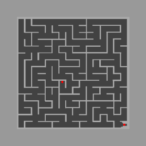 | |
| Starting Point from Warper NPC: Pyramids (Dungeon)
Destination: Inside Pyramid B1 (Dungeon) |
@navi2 moc_pryd01 90/109 | @navi2 moc_prydb1 100/55 | @navi2 moc_pryd05 94/84 | |
Monsters to kill with  Green Operation Coat [1] and Scalpel [3] Combo Green Operation Coat [1] and Scalpel [3] Combo
| ||||
| Monsters and Drops to Keep | Map Access | |||
| Desert Wolf #1106 | Ice Cave F1 (ice_dun01) | Audumra Grass Land (ra_fild01) | ||
|
Lv. 103 HP: 9 447 Brute, Fire 1, Medium Blood of Wolf(20%)
|

|

| ||
| Starting Point from Warper NPC: Ice Dungeon (Dungeon)
Destination: Audumra Grass Land (Field) |
@navi2 ice_dun01 157/10 | @navi2 ra_fild01 234/320 | ||
| Bathory #1102 | Clock Tower F1 (c_tower1) | Clock Tower F2 (c_tower2) | Clock Tower B3 (alde_dun03) | Clock Tower B4 (alde_dun04) |
|
Lv. 86 HP: 5 242 Demi Human, Shadow 1, Medium
|
|
|
|
|
| Starting Point from Warper NPC: Clock Tower (Dungeon)
Destination: Clock Tower B4 (Dungeon) Note: You need to have Key of Underground (Dropped by Clock Tower Manager) in your inventory to enter the 4th Map. |
@navi2 c_tower1 235/223 | @navi2 c_tower2 21/24 | @navi2 alde_dun03 264 17
NPC: Gatekeeper Requires a Key of Underground to enter the next map. |
@navi2 alde_dun04 79/263 |
| Vanberk #1771 | Freya's Sacred Precinct F1 (ra_san01) | |||
|
Lv. 123 HP: 24 605 Demi Human, Neutral 4, Medium
Bloody Rune(10%) |

| |||
| Isilla #1772 | ||||
|
Lv. 124 HP: 26 324 Demi Human, Neutral 4, Medium  Ur's Seal [1](0,50%) Ur's Seal [1](0,50%)
Bloody Rune(10%) Ring(0,10%) | ||||
| Starting Point from Warper NPC: Rachel Sanctuary (Dungeon)
Destination: Freya's Sacred Precinct F1 (Dungeon) |
@navi2 ra_san01 140/63 | |||


| Special Pharmacy
| ||||
|---|---|---|---|---|
| Monsters and Drops to Keep | Map Access | |||
| Zipper Bear #1417 | Shrine of Gonryun Queen (gon_dun01) | |||
|
Lv. 90 HP: 6 620 Brute, Shadow 1, Medium
Black Bear Skin(100%) Strange Steel Piece(100%) |
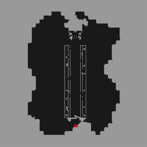 | |||
| Enchanted Peach Tree #1410 | ||||
|
Lv. 92 HP: 8 777 Plant, Earth 2, Medium
| ||||
| Starting Point from Warper NPC: Gonryun Dungeon (Dungeon)
Destination: Shrine of Gonryun Queen (Dungeon) |
@navi2 gon_dun 153/53 | |||
| Grand Peco #1369 | Aldebaran (aldebaran) | Border Posts (yuno_fild01) | Schwarzwald Guards Camp (yuno_fild09) | |
|
Lv. 75 HP: 3 150 Brute, Fire 2, Large
|
|

|

| |
| Starting Point from Warper NPC: Aldebaran (Town)
Destination: Schwarzwald Guards Camp (Field) |
@navi2 aldebaran 140/244 | @navi2 yuno_fild01 286/368 | @navi2 yuno_fild09 322/81 | |
| Incubus #1374 | Geffenia (gefenia01) | Geffenia (gefenia02) | Geffenia (gefenia03) | Geffenia (gefenia04) |
|
Lv. 120 HP: 28 000 Demon, Shadow 3, Medium
|

|

|

|

|
| Succubus #1370 | ||||
|
Lv. 119 HP: 24 960 Demon, Shadow 3, Medium
Diamond Ring(12,50%)
| ||||
| Starting Point from Warper NPC: Gefenia (Dungeon)
Destination: Any of these Gefenia Maps |
@navi2 geffenia01 | @navi2 geffenia02 | @navi2 geffenia03 | @navi2 geffenia04 |
| Drosera #1781 | Rachel, Capital of Arunafelz, the Study Nation (rachel) | Veins Field (ve_fild02) | ||
|
Lv. 101 HP: 10 878 Plant, Earth 1, Medium
Sticky Poison(100%) |

|

|
||
| Starting Point from Warper NPC: Rachel (Town)
Destination: Veins Field (Field) |
@navi2 rachel 130/21 | @navi2 ve_fild02 197/363 | ||
| Beholder #1633 | Freya's Sacred Precinct F1 (ra_san01) | Freya's Sacred Precinct F4 (ra_san04) | Freya's Sacred Precinct F2 (ra_san02) | |
|
Lv. 120 HP: 19 280 Formless, Wind 2, Small
|

|

|

|
|
| Starting Point from Warper NPC: Rachel Sanctuary (Dungeon)
Destination: Freya's Sacred Precinct F2 (Dungeon) Note: When crossing the portal in Freya's Sacred Precinct F1, there is a chance that you'll get to the F2 directly. |
@navi2 ra_san01 140/12 | @navi2 ra_san04 35/221 | @navi2 ra_san02 213/17 | |
| Watcher #3444 | Prontera City, Capital of Rune Midgard (prontera) | Prontera Central Palace (prt_cas) | Prontera Prison (prt_pri00) | Prontera Dungeon (prt_prison) |
|
Lv. 145 HP: 120 000 Formless, Wind 1, Small
|

|

|

|

|
| Starting Point from Warper NPC: Prontera (Town) or Prontera Underground Prison (Dungeon)
Destination: Prontera Dungeon (Dungeon) Note: You have to complete Learning About the Families Step 4 from the Banquet for Heroes Quests. |
@navi2 prontera 156/358 | @navi2 prt_cas 185/258 | @navi2 prt_pri00 52/116
NPC: Ellond Lawrence |
@navi2 prt_prison 149/245 |
| Seal #1317 | Beacon Island, Pharos (cmd_fild07) | Forteress Saint Darmain (West) (cmd_fild06) | Kokomo Beach (cmd_fild04) | Kokomo Beach (cmd_fild02) |
|
Lv. 47 HP: 1 371 Brute, Water 1, Medium
|

|

|

|

|
| Starting Point from Warper NPC: Monster Hunting (Special Areas)
Destination: Kokomo Beach (Field) |
@navi2 cmd_fild07 149/379 | @navi2 cmd_fild06 21/285 | @navi2 cmd_fild04 31/92 | @navi2 cmd_fild02 342/94 |


| Mixed Cooking
| ||||
|---|---|---|---|---|
| Monsters and Drops | Map Access | |||
| Savage #1166 | Geffen (geffen) | Geffen Field (gef_fild04) | Mt.Mjolnir (mjolnir_06) | Mt.Mjolnir (mjolnir_07) |
|
Lv. 59 HP: 2 301 Brute, Earth 2, Medium
|
|

| ||
| Starting Point from Warper NPC: Geffen (Town)
Destination: Mt.Mjolnir (Field) |
@navi2 geffen 217/119 | @navi2 gef_fild04 362/322 | @navi2 mjolnir_06 383/74 | @navi2 mjolnir_07 49/86 |
| Drosera #1781 | Rachel, Capital of Arunafelz, the Study Nation (rachel) | Veins Field (ve_fild02) | ||
|
Lv. 101 HP: 10 878 Plant, Earth 1, Medium
Sticky Poison(100%) |
|
|
||
| Starting Point from Warper NPC: Rachel (Town)
Destination: Veins Field (Field) |
@navi2 rachel 130/21 | @navi2 ve_fild02 197/363 | ||
| Minorous #1149 | Inside Pyramid F1 (moc_pryd01) | Thief Guild (moc_prydb1) | Inside Pyramid B1 (moc_pryd05) | |
|
Lv. 58 HP: 1 893 Brute, Fire 2, Large
|
|
|
||
| Starting Point from Warper NPC: Pyramids (Dungeon)
Destination: Inside Pyramid B1 (Dungeon) |
@navi2 moc_pryd01 90/109 | @navi2 moc_prydb1 100/55 | @navi2 moc_pryd05 94/84 | |
| Desert Wolf #1106 | Ice Cave F1 (ice_dun01) | Audumra Grass Land (ra_fild01) | ||
|
Lv. 103 HP: 9 447 Brute, Fire 1, Medium Blood of Wolf(20%)
|
|
|
||
| Starting Point from Warper NPC: Ice Dungeon (Dungeon)
Destination: Audumra Grass Land (Field) |
@navi2 ice_dun01 157/10 | @navi2 ra_fild01 234/320 | ||
| Petite #1155 | Glast Heim (glast_01) | Geffen Field (gef_fild06) | ||
|
Lv. 86 HP: 5 799 Dragon, Earth 1, Medium Insert paragraph
Petite's Tail(4%)  Crimson Mace [2](0,50%) Crimson Mace [2](0,50%) Dragon Canine(100%) |
|
|
||
| Starting Point from Warper NPC: Glast Heim Entrance (Dungeon)
Destination: Geffen Field (Field) |
@navi2 glast_01 377/304 | @navi2 gef_fild06 38/304 | ||
| Iceicle #1789 | Ice Cave F1 (ice_dun01) | Ice Cave F2 (ice_dun02) | Ice Cave F3 (ice_dun03) | |
|
Lv. 100 HP: 1 012 Formless, Water 2, Small Ice Crystal(50%)
|

|

|

|
|
| Gazeti #1778 | ||||
|
Lv. 106 HP: 14 000 Demon, Water 1, Medium
Frozen Bow [1](0,10%) | ||||
| Ice Titan #1777 | ||||
|
Lv. 110 HP: 20 280 Formless, Water 3, Large Cold Ice(50%)
Frozen Rose(10%) | ||||
| Starting Point from Warper NPC: Ice Dungeon (Dungeon)
Destination: Ice Cave F3 (Dungeon) |
@navi2 ice_dun01 146/161 | @navi2 ice_dun02 150/285 | @navi2 ice_dun03 148/38 | |


| Change Material
| ||||
|---|---|---|---|---|
| Monsters and Drops | Map Access | |||
| Evil Nymph #1416 | Shrine of Gonryun Queen (gon_dun01) | Hermit's Checker (gon_dun02) | Arcadia (gon_dun03) | |
|
Lv. 97 HP: 8 491 Demon, Shadow 3, Medium
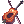 Crimson Violin [2](0,50%) 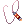 Crimson Wire [2](0,50%) |

|

|

| |
| Starting Point from Warper NPC: Gonryun (Dungeon)
Destination: Arcadia (Dungeon) |
@navi2 gon_dun01 162/273 | Try landing on the most upper right island by Teleporting. | @navi2 gon_dun03 70/28 | |
| Orc Warrior #1023 | Orc Dungeon F1 (orcsdun01) | Orc Village (in_orcs01) | Geffen Field (gef_fild10) | |
|
Lv. 44 HP: 1 434 Demi Human, Earth 1, Medium
Orcish Axe(0,30%) Cigarette(0,20%) |

|

|

|
|
| Starting Point from Warper NPC: Orc Dungeon (Dungeon)
Destination: Geffen Field (Field) |
@navi2 orcsdun01 32/172 | @navi2 in_orcs01 30/154 | @navi2 gef_fild10 75/329 | |
| Archer Skeleton #1016 | Payon Cave F1 (pay_dun00) | Payon Cave F2 (pay_dun01) | ||
|
Lv. 50 HP: 1 646 Undead, Undead 1, Medium
Great Bow [3](1,80%)
|

|

|
||
| Soldier Skeleton #1028 | ||||
|
Lv. 34 HP: 804 Undead, Undead 1, Medium
| ||||
| Starting Point from Warper NPC: Payon Cave F1 (Dungeon)
Destination: Payon Cave F2 (Dungeon) |
@navi2 pay_dun00 184/22 | @navi2 pay_dun01 54/50 | ||


Stats Suggestions
- STR: 110
- AGI: 1
- VIT: 7
- INT: 120
- DEX: 130
- LUK: 1
This build is designed to maximize your Damage output and also your Weight Capacity.
STR is needed to have some base ATK for your Damage and also enlarges your Weight Capacity.
AGI isn't really needed because of most the time you will be able to one shot most of the normal Monsters.
VIT isn't really needed because most of the monsters that you will want to farm doesn't usually deal a lot of damage and can be easily killed with one shot.
INT is your main Damage Stat, each point directly Increases your Cart Cannon Damage.
It also contributes to reach Instant Cast
DEX is needed to reach Instant Cast as it counts Twice.
It also add a little bit of ASPD making you spam Skills a little bit Faster.
LUK isn't needed in this build.
Skills Suggestions
Skill Tree

Used Skills
| Main Skills | Skill Rank | Use |
|---|---|---|
| Cart Cannon
|
This will be your main Skill to kill every monsters.
This Damage Formula is:
In other words, this formula means that the higher your INT Stat, ATK and Just a reminder, the Element of your The Different Property Cannon Balls are:
You can buy Cannon Balls from Mado Dealer in Prontera Town, | |
| Cart Boost
|
You must always have this Buff no matter what, it increases both your Movement Speed and the Damage of your Cart Cannon.
| |
| Loud Exclamation
|
Like, Cart Boost, you must always have this buff, it's basically a free +4 STR.
| |
| Extra Skills | Skill Rank | Use |
| Call Homunculus
|
Always have your Homunculus assist you in battle.
Their Buffs are meant to be used by you to increase your efficiency in battle. | |
| Potion Pitcher Lv 4
|
This allows you to Restore HP or SP to Yourself or Allies if you don't have a Healer in your Party or if you're Soloing/Farming. | |
| Sword Training
|
This Skill will increase your ATK when using a One-Handed Sword or a Dagger. | |
| Crazy Weed
|
These Skills can be an alternative to Cart Cannon when farming as it makes you not spend any Zeny to buy Ammunition, but to make this worth, you will need a  +7 Harvester Hat [1]. +7 Harvester Hat [1].
But in one hand, it's still better to sell the extra loots that you get from In the other hand, if you think that you won't need any extra Zeny and you plan on staying on the Field/Dungeon to farm, then you would probably would use these Skills rather than buying Ammunition for Note that the Seeds weight is 0,1 and Cannon Balls is 1. | |
| Spore Explosion
|
Click on [Expand] to reveal the Homunculus Skills and Consumables.
| Homunculus Skills | Homunculus | Use |
|---|---|---|
| Silent Breeze
|
This Skill can be used to restore your HP and also cure some Status Effects.
I find this particularly useful to remove the Status Effect Hallucination when you're farming in Gefenia for example. | |
| Pyroclastic
|
Use this Skill to boost your Damage.
| |
| Pain Killer
|
I generally use this skill when farming as it allows me to receive very very little Damage.
This makes your farming experience much more comfortable and also allows you to not carry any extra Consumables which just add Weight. | |
| Stein Wand
|
This Skill can be used to protect Yourself and your Safety Wall.
This can be used when you have gathered too much Monsters than you can handle much like | |
| Consumables | Way to Obtain | Use |
| Fly Wing | This item is a staple consumable when you're farming or just navigating.
It allows you to | |
| White Potion | Always have this item in your Inventory to be able to use Potion Pitcher Lv 4.
| |
| Shiny Marinade Beef
|
Dropped by Payon Soldier in Sara's Memory Instance.
|
Always farm these Foods in Sara's Memory Instance, it's easy enough to complete and you can have these Foods that gives +6 Stats. |
| Anodyne
|
Dropped by Monsters
|
This Item allows you to have the Endure effect which enables you to still walk while taking Damage as long as you the Buff is active.
This is useful when you're trying to gather monsters, it makes you not "Flinch" when taking damage, thus making the monster gathering smoother. |
Equipment Suggestions
Early Game Equipment
I don't really have any Early Game Equips Suggestions because to farm efficiently, you need to have a specific gear set.
But you can still try to farm some ingredients with Eden Gears.
End Game Equipment
| Item | Type | Way to Obtain | Notes |
|---|---|---|---|
| Harvester Hat [1]
|
Upper Headgear | Nova Shop | You will want to have to Headgear when farming for the drops that it gives.
On it's own it drops, You need this hat to be +7 to get the most of the farming potential as it drops I always keep around You can also try to +9 it to increase your |
 Rideword Hat [1] Rideword Hat [1]
|
Headgear Quest | This Upper Headgear enables you to leech 8% and 4% of your dealt Physical Damage as HP and SP for 5% and 1% chance respectively.
At +9 the amount of HP and SP leeched is doubled, but you don't really need that as you will only use it when farming and what only matters is the SP leech, so if you pair this with a Ideally you would use this Upper Headgear only when you think that you won't need extra income from the | |
 Black Frame Glasses [1] Black Frame Glasses [1]
|
Middle Headgear | Use a Spiritual Auger on a Black Frame Glasses to give it a Slot.
Both items are in the Nova Shop |
This is the only Mid Headgear that gives INT and is slotted. |
 Spare Card Spare Card
|
Lower Headgear | Nova Shop | This Lower Headgear allows you to drop  Blank Card which can be exchanged for other Items in the Second Floor of the Main Office. Blank Card which can be exchanged for other Items in the Second Floor of the Main Office.
The most relevant Items to exchange are This Lower Headgear is not mandatory but it's a great Item to add some extra Income. |
| Green Operation Coat [1] | Armor | Biolab Gear Exchange
Dropped by Flamel |
This is the only Armor that enables Brute and Demi-Human Monsters to drop  Immortal Heart and Alcohol when paired with Scalpel [3]. Immortal Heart and Alcohol when paired with Scalpel [3].
These dropped items are required materials to create Acid Bottle and The drop rate increases by 7% for You need to get it at least to +9 to get a decent drop rate of those items which is 63% and 45% for But it can also do an okay job at +7 which is 49% and 35% |
| Orlean's Gown [1]
|
Dropped by Monsters | This Armor allows you to make your casts uninterruptible making your Cart Cannon or even Acid Demonstration always hit your target.
Equip this one if you're farming in a place where it's crowded with a lot of monsters and if your Casting Time is slow. | |
| Scalpel [3] | Weapon - Dagger | Dropped by Monsters | This Dagger is required to be equipped with Green Operation Coat [1] to activate the combo effect.
This Dagger is pretty easy to get and you can also try to Over Refine just to get a little bit more Damage but it's not mandatory. |
| Thanatos Hammer [1]
|
Weapon - Mace | Ghost Palace | This Weapon has the same purpose of the Rideword Hat [1].
This Weapon enables you to leech 5% of your dealt Physical Damage as HP and SP for 5% and 1% chance respectively. You can also try to get the ideal enchantment for the specific Property or Race of the Monster that you're farming. |
| Red Square Bag [2] | Dropped by Mistress | This Weapon enables any Monsters to drop a Random Potion for a very low chance.
For 1% chance: For 0,5% chance: The interesting part is that they can be enchanted in Malangdo.
Naturally you will want You can also aim for This is not really ideal when farming because it adds too much weight in the inventory and also takes a 5 total space, but I just wanted to mention this Weapon because it can drop | |
| Crimson Mace [2]
|
Dropped by Monsters | Equip your Godlike Weapon if you can't One Shot the monster you're farming with the mentioned Weapons above. | |
| Mad Bunny [1]
|
Shield | Nova Shop | By itself, it gives ATK+5% and MATK+5%, but this truly shines at +9 where it gives you a total of ATK+20 and MATK+20 plus the previous bonuses.
This can contribute to the Damage that you need to be able to one shot certain Monsters. |
| Bradium Shield [1] | Dropped by Monsters | Get any of these shields to have some DEF to be able to resist some Damage.
The Bradium Shield [1] gives more defensive Stats than Round Buckler [1], but the latter is easier to farm. | |
| Round Buckler [1] | Dropped by Monsters | ||
| Giant Snake Skin [1]
|
Garment | Different Giant Snake Skins are acquired in Faceworm Nest | This Garment is the best you can get on early levels as it provides various bonus Stats, it's a very popular item and can be found all over the Market.
This is also an End Game Item as it's the only Garment that can give up to INT+17, but it's very rare, if you can fetch a INT+14 it's already very very good. In any case, at the beginning you can try to buy some |
 Nidhoggur's Shadow Garb [1] Nidhoggur's Shadow Garb [1]
|
Dropped by Nidhoggur's Shadow in Nidhoggur's Nest | This Garment increases your MaxSP by 1/3 of your Base Level and also by 10 times the Refine Level.
Meaning that if you're Level 175 and you have it at +4, it will give you around MaxSP+99. This Garment enables you to leech 1% of your dealt Physical Damage as SP for 1% chance. | |
| Temporal Boots of Dexeterity [1]
|
Footgear | Temporal Boots crafting materials can be obtained in Old Glast Heim | This Footgear will give you DEX+3 for every 3 Refine Level, this is already very good at +4 but of course it's better at +9, making it a nice addition when you're Farming is it will enable you to get close to/reach Instant Cast.
The |
| Variant Shoes
|
Dropped by Beelzebub | Equip this Footgear if you have access to it, it increases both your MaxHP and MaxSP by 20%.
This makes your MaxSP large enough to be able to stay in a Dungeon/Field for a very long time if you pair it with SP Leeching Equipment. | |
| Red Lantern [1] | Accessory | Possible Reward in the Treasure Room at the end of Horror Toy Factory. | This Accessory enable Monsters to drop Alcohol Detrimindexta and  Karvodailnirol for 0,1% chance. Karvodailnirol for 0,1% chance.
You mainly want this to boost up your You can also sell You can either NPC Sell Detrimindexta or try to Vend it but it's not very popular among players. |


Cards Suggestions
For Farming, I mostly put Essence of Evil DEX3 in everything except when there is a better card option.
With this, in pretty much every Equipment that I have allows me to reach Instant Cast without any Arch Bishop Buffs.
You can also have some SP Recovery Cards Instead if you can't afford Essence of Evil DEX3.
| Card | Card Slot | Card Effect | Notes |
|---|---|---|---|
| Essence of Evil INT3 | Any Slots | Adds INT+4. MATK+12. STR-4. | This little gem can be put in any open slot possible.
It can be obtained as a completion reward of the Temple of the Demon God Instance. Equip this one if you are in need of more Damage. |
| Essence of Evil DEX3
|
Adds DEX+4. HIT+8. LUK-4. | This little gem can be put in any open slot possible.
It can be obtained as a completion reward of the Temple of the Demon God Instance. Equip this one if you want a Quicker Casting time. | |
| Headgear | Adds INT-3, Maximum SP+150 and SP Recovery-20%.
If equipped with a |
When farming you really need to be SP wise, Increased SP Recovery helps with that.
The card's description is quite confusing, basically when you equip it with | |
| Armor | Adds VIT-3, Maximum HP+1000 and HP Recovery-20%.
If equipped with a |
You need this card to activate the combo with | |
| Weapon | Increases your damage to Demi-Human monsters by 20%. | Put this on your Scalpel [3] if you're killing Demi-Human monsters. | |
| Increases your damage to Brute/Animal monsters by 20%. | Put this on your Scalpel [3] if you're killing Brute/Animal monsters. | ||
| Footgear | Adds SP Recovery+15%. | Basic card that adds SP Recovery. | |
| Adds Max SP+15% and SP Recovery+3%. | Basic SP boosting card. | ||
| Accessory | Enables you to use |
This card basically replaces Fly Wingthus letting you have more space and weight for other loots. | |
| Makes your skill casting un-interruptable. | Put this card in your accessory if you don't have a lot of DEX for now and you are mobbing a lot. |
Shadow Gear Suggestions
Click on [Expand] to reveal the Shadow Gear Suggestions.
Shadow Gears are obtained in Monster Hunter by killing a specific MvP and using the loots to forge these.
These gears goes into your costume equips meaning that it won't replace your main equips.
| MVP | Shadow Gear Set | Total Materials Required | Effects and Notes |
|---|---|---|---|
Domovoi |
If you complete the Mystic Set, you'll have INT+5 and MATK+5.
Take this set if you want more Damage with | ||
Celestial Tendrillion |
If you complete the Cunning Set, you'll have DEX+5 and Cast Time -5%.
Take this if you want a Faster Casting Time. |
Cute Pet Suggestions
Click on [Expand] to reveal the Cute Pet Suggestions.
These are the different Cute Pets that I would suggest using when Farming, feel free to use any, even though  Incubus Pet is the most useful.
Incubus Pet is the most useful.
| Pet | Way to Obtain | Food | Effects when Loyal |
|---|---|---|---|
| Girl's Naivety |  Yellow Vital Flower Yellow Vital Flower
|
| |
| Charming Lotus |  Morning Dew Morning Dew
|
| |
| Well-Dried Bone | Pet Food
|
| |
| Deviruchi Pet Evolution | Pet Food
|
|


Brewing and Cooking
Before going any further down this section, I want you to know that if you have a Max Leveled Minstrel or Wanderer in a Different Account from your Brewer, you can achieve 100% Success Rate with just a  Temporal Dex Boots [1] enchanted with
Temporal Dex Boots [1] enchanted with  Lucky Day as your only equipment on your Brewer and by arranging your Minstrel/Wanderer Status Points according to the Brewing Skill and just use
Lucky Day as your only equipment on your Brewer and by arranging your Minstrel/Wanderer Status Points according to the Brewing Skill and just use  Marionette Control on your Brewer.
Marionette Control on your Brewer.
Clown/Gypsy's Marionette Control allows them to give 50% of all of each of their Base Status Points to their Target.
Here are screen shots of my Geneticist's and Minstrel's Status Windows in-game that explains how Marionette Control works.

Here is my process to get the most of Marionette Control.
- I put the Adequate Status Build on my Minstrel/Wanderer
- I reset the Status Points of my Brewer
- I remove every equipment that my Brewer has on.
- I use Marionette Control on my Brewer.
- I put the Adequate Status Build on my Brewer.
- I put on the Equipment for my Brewer.
- If you have Lucky Day enchant in a Temporal Boots, go in the Training Dummies and auto-attack any dummies to proc it. (You can skip this step if you don't have the requirements)
- I use my Brewing/Creation Skills.
The Priest Class also has access to Buffs that can increase your Success Rate.
Priest Skill Rank Buffs
 Blessing adds bonus DEX and INT stats which are required for higher success rate.
Blessing adds bonus DEX and INT stats which are required for higher success rate. Gloria adds a massive bonus LUK+30.
Gloria adds a massive bonus LUK+30.
Arch Bishop Skill Rank Buffs
 Clementia, this Arch Bishop buff basically casts Blessing on every party member but it is better than the normal Blessing because it gives more bonus stats depending on the Caster's Job Level.
Clementia, this Arch Bishop buff basically casts Blessing on every party member but it is better than the normal Blessing because it gives more bonus stats depending on the Caster's Job Level.
Vanilmirth's  Change Instruction Lv 5 also gives a flat +5% Success Rate.
Change Instruction Lv 5 also gives a flat +5% Success Rate.
Skill Tree
Skills Used and Status Builds Suggestions
| Main Skills | Skill Rank | Suggested Status Build | Formula | |
|---|---|---|---|---|
| Pharmacy
|
|
|
The Success Formula of
| |
| Potion Rate | Product | |||
+15% ~ +25%
|
 Red Potion, Red Potion, Yellow Potion , White Potion Yellow Potion , White Potion
| |||
+5% ~ +15%
|
Alcohol
| |||
-5% ~ +5%
|
Acid Bottle, Bottle Grenade,  Plant Bottle Plant Bottle
| |||
-5%
|
 Blue Potion, Anodyne, Aloevera, Blue Potion, Anodyne, Aloevera,  Embryo, Embryo,  Fireproof Potion, Fireproof Potion, Coldproof Potion, Coldproof Potion, Earthproof Potion, Earthproof Potion, Thunderproof Potion, Thunderproof Potion, Condensed Red Potion Condensed Red Potion
| |||
-10% ~ -5%
|
 Condensed Yellow Potion Condensed Yellow Potion
| |||
-15% ~ -5%
|
Condensed White Potion, Glistening Coat
| |||
| Mixed Cooking
|
|
|
The Success Formula of Mixed Cooking according to iRO Wiki is that it compares the values of Creation and Difficulty. If Creation value is higher than the Difficulty value, it will create the dishes; otherwise it won't.
For
| |
| Special Pharmacy
|
|
|
The Success Formula of Special Pharmacy according to iRO Wiki is that it compares the values of Creation and Difficulty. If Creation value is higher than the Difficulty value, it will create the potions; otherwise it won't.
| |
Equipment Suggestions
Early Game Equipment
| Item | Type | Way to Obtain | Notes |
|---|---|---|---|
| Morigane's Helm | Upper Headgear | Dropped by Hydrolancer | If the Morrigane's Set is worn altogether, it gives LUK+9. |
 Valkyrian Armor [1] Valkyrian Armor [1]
|
Armor | Dropped by Valkyrie Randgris | All Stats+1.
It can also be enchanted for extra stats by the NPC Apprentice Craftsman in |
| Fortune Sword | Weapon - Dagger | Dropped by Monsters | It gives LUK+5. |
 Haedonggum [1] Haedonggum [1]
|
Weapon - Sword | Can be bought from various NPCs | It gives INT+3. |
| Morrigane's Manteau | Garment | Dropped by Thanatos Phantom | If the Morrigane's Set is worn altogether, it gives LUK+9. |
| Crystal Pumps | Footgear | Dropped by Monsters | It gives LUK+5. |
 Morrigane's Belt [1] Morrigane's Belt [1]
|
Accessory | Dropped by Kiel D-01 | If the Morrigane's Set is worn altogether, it gives LUK+9. |
| Morrigane's Pendant [1] |
End Game Equipment
| Item | Type | Way to Obtain | Notes |
|---|---|---|---|
| Alladin's Lamp [1] | Upper Headgear | Summer Festival Digging | This hat gives a massive LUK+10 and is slotted! |
 Can Hat Can Hat
|
This hat gives LUK+3. | ||
 Hat Of Fortune [1] Hat Of Fortune [1]
|
Nova Shop | This hat can potentially out stats everything but it must be over-refined.
It gives you LUK+2 and you also gain LUK+1 for each refine level above +4. | |
 Asgard's Blessing [1] Asgard's Blessing [1]
|
Exchange  500 Gold Coin to Master of Coin 500 Gold Coin to Master of Coin
|
This hat gives All Stats+2. | |
| Advanced Welding Mask | Upper and Middle Headgear | Eden Group Crystal Synthesis | This mask gives DEX+5 and LUK+5. |
| Black Frame Glasses [1]
|
Middle Headgear | Nova Shop | These glasses gives INT+1. |
| 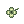 Four Leaf Clover | Lower Headgear | The Claw | This leaf gives LUK+3. |
| Hero Trade Mail [1]
|
Armor | Prize of Hero from Bios Island and Morse Cave | This Armor gives you 1 STR/AGI/VIT/INT/DEX/LUK for every 2 refine levels as long as your STR/AGI/VIT/INT/DEX/LUK are equal to 90 or higher.
You obviously only want the INT/DEX/LUK part, so you don't need to invest any points on the other stats. |
 Excalibur Excalibur
|
Weapon - One-Handed Sword | Level 4 Weapon Type 2 Quest | This sword gives a massive LUK+10. |
 Giant Snake Skin [1] Giant Snake Skin [1]
|
Garment | Different Giant Snake Skins are acquired in Faceworm Nest | This garment has a potential of giving LUK+18 in total. |
| Temporal Dex Boots [1]
|
Footgear | Temporal Boots crafting materials can be obtained in Old Glast Heim | This boots gives DEX+3 for every 3 Refine Level it has and can be enchanted with Lucky Day to be able to proc the LUK+200 effect.
You can also use the |
 Hero Ring Hero Ring
|
Accessory | Token of Hero Exchange | This Accessory can be enchanted four times by exchanging Token of Hero to Expert Enchanter Byrnes /navi moro_cav 34/65 in the Fire Basin Cave
Aim for the LUK/DEX/INT enchants. Token of Hero can be obtained in Bios Island and Morse's Cave. |
 Silversmith Bracelet [1] Silversmith Bracelet [1]
|
Possible Reward in the Treasure Room of Old Glast Heim | This bracelet gives All Stats+1 and is slotted. |
Cards Suggestions
| Card | Card Slot | Card Effect | Notes |
|---|---|---|---|
| Headgear | Adds LUK+2, adds LUK+1 every 3 refine on a headgear if used by a Merchant Class. | A card that adds LUK depending on your Headgear's Refine Level. | |
| Adds LUK+2. | Basic card that adds LUK+2. | ||
| Armor | Adds LUK+3. | Basic card that adds LUK+3. | |
| Shield | Adds LUK+2. | Basic card that adds LUK+2, just add it on any other shield, the lightest one possible so you can carry more mats on you. | |
| Garment | Adds LUK-5, adds LUK equal to the refine level of the Garment. | For this to give an actual bonus, the Garment must be at least +6 (it adds LUK+1 at this point). | |
| Accessory | Adds LUK+2. | Basic card that adds LUK+2. |
Shadow Gear Suggestions
Click on [Expand] to reveal the Shadow Gear Suggestions.
Shadow Gears are obtained in Monster Hunter by killing a specific MvP and using the loots to forge these.
These gears goes into your costume equips meaning that it won't replace your main equips.
| MVP | Shadow Gear Set | Total Materials Required | Effects and Notes |
|---|---|---|---|
Domovoi |
The Mystic Set gives INT+5 so it's better when using Special Pharmacy because it favors INT over DEX.
| ||
Celestial Tendrillion |
The Cunning Set gives DEX+5 so it's better when using Pharmacy and Mixed Cooking as they favor DEX over INT.
|
Cute Pet
Click on [Expand] to reveal the Cute Pet Suggestions.
These are the different Cute Pets that I would suggest using when Farming, feel free to use any, even though the  Mastering Egg gives the most stats.
Mastering Egg gives the most stats.
| Pet | Way to Obtain | Food | Effects when Loyal |
|---|---|---|---|
 Poring Pet Evolution Poring Pet Evolution
Random Pet Egg from Nova Shop |
Pet Food
|
| |
 Unripe Apple Unripe Apple
|
Apple Juice |
| |
 Bitter Herb Evolution Bitter Herb Evolution
|
 Green Herb Green Herb
|
|


Item Creation List
You can view the Full List of Item Creations by Clicking on the Skill's Name
| You can buy any Materials or Ingredients that can't be dropped by Monsters from these NPCs in Aldebaran Town. | |||
|---|---|---|---|
| 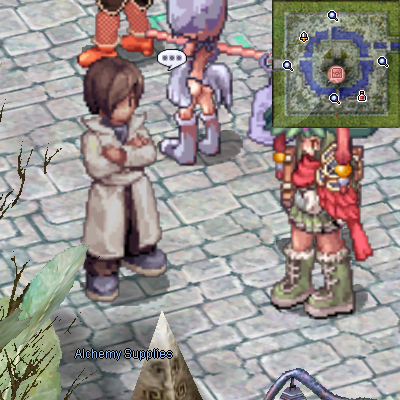 | 
|

|

|
Alchemy Supplies sells Brewing Materials and Cooking Supplies.
|
Guild Dealer sells Alchemists Production Manuals such as Potion Creation Guide.
|
Craft Book Merchant sells Geneticists Production Manuals such as
 Cooking Book: Mix Cooking. Cooking Book: Mix Cooking. |
Material Seller sells
 Embryo Materials and Cooking Supplies. Embryo Materials and Cooking Supplies. |
| Mixed Cooking | |||
|---|---|---|---|
Each Cast requires a  Medicine Bowl. Medicine Bowl.
|
Each success results to 10 items created. |
|
Converts materials into another material.
No Manuals are needed. |
|
|
|
Siroma Ice Tea(DEX+20 Food) Petite Tail Noodles(LUK+20 Food) |
5 Fabric |


Homunculus System
Alchemical Progress enables you to create Artificial Living Creatures most commonly called Homunculus. In-game, they can be called upon at will and help you in battle, to support yourself, kill monsters and some even assists you when brewing potions.
Homunculus Creation
To create a Homunculus you need to have an Embryo in your inventory.
Then use the skill Call Homunculus.
That's it, congratulations, you now have a Homunculus!
You can access to its window with Alt+R.
Your Homunculus gains 1 Skill Point every 3 Levels.
You can see your Homunculus's Stat Points by using @homstats and you can track its Intimacy Points with @hominfo.
Your Homunculus gains 25% of your gained EXP and Quest EXP.
Additionally, one of NovaRO's Features is the Homunculus Bank which can be found in the 2nd Floor of the Main Office /navi npc_in 18/109.
This feature allows you to store Homunculus for a price.
You can store up to 4 Homunculus and still have 1 Homunculus with you, this enables you to have the 5 different Homunculus S!
Feeding and Intimacy
Homunculi gets hungry over time, it will loose 1 Hunger Point every minute, and if left starved, it will leave you and you will have to create a new one, so to avoid that you must feed it with its favorite food.
Feeding your Homunculus will strengthen its Intimacy between you two.
NovaRO's Beta Client gives you the Auto Feed option.
Click on [Expand] to reveal Food Sellers Locations.
| Food Seller | Food Seller | ||||||||
|---|---|---|---|---|---|---|---|---|---|

|

| ||||||||
/navi geffen 46/88
|
/navi prontera 217/211
|
||||||||
 Zargon Zargon
|
 Scell Scell
|
Garlet | Pet Food
|
 Big Cell Big Cell
|
 Small Snow Flower Small Snow Flower
|
 Apple Pudding Apple Pudding
|
 Fresh Plant Fresh Plant
|
Bun | |
|
|
|
|
|
|
|
|
| |
Perfect Feeding Time
Your Homunculus gains Intimacy Points depending on its Hunger Points. If you feed it at the right moment you will earn the highest possible Intimacy Points,if you feed it too much you will earn less Intimacy Points, if you Over Feed it, it will loose Intimacy Point for every 2 consecutive Over Feeding as well as letting it Starve(when the Hunger Bar is Red).
- If left starving, over time you will loose 1 Intimacy Point.
- Between 1 - 11, you will earn 5 Intimacy Points.
- Between 11 - 31, you will earn 10 Intimacy Points.
- Between 31 - 81, you will earn 7 Intimacy Points.
- Between 81 - 100, you will earn 0 Intimacy Point.
- If fed at 100 2 times consecutively, you will loose 1 Intimacy Point.
Feeding your Homunculus between 11 - 31 Hunger is the most optimal way to earn Intimacy Points.
The Auto Feed option will feed your Homunculus just before its Hunger Bar turns to Red.
Your Homunculus will have to consume around 90 Foods to become Loyal from Creation.
Intimacy Levels
Your Homunculus's Intimacy will change depending on its Intimacy Points.
- Between 1 - 3, Hate with Passion
- Between 4 - 10, Hate
- Between 11 - 100, Awkward
- Between 101 - 250, Shy
- Between 251 - 750, Neutral
- Between 751 - 910, Cordial
- Between 911 - 1000, Loyal
When it reaches Loyal, your Homunculus will be able to Evolve.
Remember that you can check these points in-game by typing the @hominfo command.
Evolution and Mutation
Evolution
If your Homunculus Intimacy is Loyal, you can use a 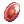 Stone of Sage to Evolve it.
Once Evolved, your Homunculus will have a great boost on its MaxHP and MaxSP, adding a large random number on its Status Points and it will also be able to learn its 4th Skill once it's Loyal again or when Mutated.
Click on [Expand] to reveal the Evolution Walkthrough.


Mutation
Once your Homunculus reached Level 99 with its Evolved Form, it will be able to transform into a Homunculus S by undergoing Mutation.
Upon reaching it's Mutated Form, your Homunculus will already have change its appearance completely and is even stronger and increasing its level cap at Level 175, it will also be able to learn new Skills while keeping its old ones.
To Mutate your Homunculus you need to complete the Mutation Quest, and you must be a Geneticist to be able to do it.
Note that your Homunculus doesn't need to be Loyal to be able to mutate into Homunculus S.
Click on [Expand] to reveal the Mutation Quest Walkthrough.

|

|

|

|

|
|---|---|---|---|---|
You must first have a Level 99 Evolved Homunculus to be able to proceed.
|
Once you meet the Requirements, head to Lighthalzen and make your way to the area highlighted in red above.
|
Once inside, go to the end of the hall, and you will find Viorel.
Talk to him and go to his home.
|
Inside his room, talk to him again, and choose "Like, biological experiments... ?!"
|
Then choose "Explore the Homunculus Mutation System".
He will send you to see her colleague Jeyna afterwards.
|

|

|

|

|
|
Talk to Jeyna and just finish the conversation.
|
Then talk to the Magic Board, it will present you the different types of Mutated Homunculus.
|
Talk to Jeyna again and choose the option "Yes, I do."
|
After that, she will transform your current Homunculus into a Strange Embryo.
She will then send you to Viorel.
|
Talk to Viorel and choose the option "Mutation stabilization (50,000 zeny) to be able to choose your desired Mutated Homunculus.
|

|

|
|||
Choose your desired Homunculus S.
|
Congratulations, you now have a Homunculus S!
|
Homunculus Species
Basic Homunculus

|
||||||||||
| |
|
|
| |||||||

|

|

|

|

| ||||||
| Tank Type Homunculus
Eats |
Mage Type Homunculus
Eats |
Support Type Homunculus
Eats |
Assassin Type Homunculus
Eats Garlet | |||||||
|
|
|
|
| |||||||
Pros
Cons
|
Pros
Cons
|
Pros
Cons
|
Pros
Cons
| |||||||


Basic Homunculus Thoughts
Amistr

Choosing an Amistr will provide you survivability thanks to  Castling which switches the positions and monster aggro of the Owner and Amistr.
Castling which switches the positions and monster aggro of the Owner and Amistr.
It can also boost up your VIT with  Defense by +30 at Lv 5.
Defense by +30 at Lv 5.
Amistr is the best base for every end-game content thanks to the supportive skills that it has. If mutated into an Eira it is able to tank some MvPs thanks to the mix of its high MaxHP, DEF and
Eira's high Flee Rate.
If mutated into a Dieter, it can further increase survivability with
 Granitic Armor which reduces incoming damage by 10% at Lv 5 while also massively increasing your ATK with Pyroclastic.
Granitic Armor which reduces incoming damage by 10% at Lv 5 while also massively increasing your ATK with Pyroclastic.

Vanilmirth

Choosing a Vanilmirth will increase your brewing success rate thanks to his Change Instruction which adds 5% at Lv 5.
Vanilmirth has a very good stats growth which makes a good base for every Homunculus S.
Lif
Choosing a Lif is generally just for the large MaxSP.
Worrying about your Homunculus's SP is really not your priority because you're the one using Cart Cannon not your Lif.
Lif has very little to offer,  Touch of Heal is kind of decent but you will need to brew Condensed Red Potion to make it work.
Touch of Heal is kind of decent but you will need to brew Condensed Red Potion to make it work.  Emergency Avoid is put in a shelf thanks to Cart Boost which is better.
Emergency Avoid is put in a shelf thanks to Cart Boost which is better.
Lif is best mutated into an Eira to make use of her high MATK with
 Eraser Cutter and
Eraser Cutter and  Xeno Slasher, but once again, the main damage dealer is you not the Homunculus.
Xeno Slasher, but once again, the main damage dealer is you not the Homunculus.
Her Large SP Pool can benefit Eleanor which tends to spam
 Sonic Claw.
Sonic Claw.
Filir is a Glass Cannon Homunculus, it means that it has very low survivability but has a very high ATK.
Filir's high ATK benefits every Homunculus specially Bayeri and
Eleanor are particularly the best mutations for Filir thanks to their spammable ATK scaling skills which are
 Heilige Stange and Sonic Claw respectively.
Heilige Stange and Sonic Claw respectively.
Mutating Filir into Eira to farm Intimacy with
Overed Boost can be an idea to charge up for  S.B.R.44 but other than that, it is kind of useless because she mainly use MATK for her skills.
S.B.R.44 but other than that, it is kind of useless because she mainly use MATK for her skills.
Mutated Homunculus/Homunculus S
| Sera | ||||||||
|---|---|---|---|---|---|---|---|---|
|
|
|
| ||||||
| Tank - Support Homunculus
Eats |
Mage - Support Type Homunculus
Eats |
Support - Summoner Type Homunculus
Eats |
Fighter - Mage Type Homunculus
Eats |
Assassin - Monk Type Homunculus Eats Bun | ||||
|
|
|
|
| ||||
Pros
Cons
|
Pros
Cons
|
Pros
Cons
|
Pros
Cons
|
Pros
Cons
|


Mutated Homunculus/Homunculus S Thoughts
Dieter
You might want a Dieter if you want to deal more damage with Acid Demonstration and Cart Cannon thanks to Pyroclastic.
Eira
You might want an Eira for her Overed Boost which fixed your ASPD at 189 and your Flee at 500 so you can spend those stat points on other stats besides AGI.
Thanks to the ASPD it provides, when affected by Poem of Bragi, it'll allow you to spam Cart Cannon as if you were a machine gun still with no added AGI.
Light of Regen also acts like a Token of Siegfried, it lets you revive yourself if you die.
Silent Breeze is a great skill that heals and cleanses you from a lot of Status Ailments.
You might want a Sera for her Pain Killer which makes every incoming damage tickle. This is great when farming on offensive monsters (for example when you want to farm in Geffenia).
Needle Paralyze can also replace Thorn Trap. It basically locks down your target which is very very useful.
Bayeri
You might want a Bayeri for the infinite
Safety Wall thank to Stein Wand which is a great survival skill, this will also enable your Homunculus to Tank some Monsters for you.
Eleanor
You might want an Eleanor if you want to AFK Level with Sonic Claw which pretty much 1 shots every monsters in her vicinity. That's all.
Artificial Intelligence
Artificial Intelligence or simply AI is a program that controls all of your Homunculus's action.
The server is offering AzzyAI's Artificial Intelligence which is really really good.
In this section, I will just talk you about how to basically use the AI.
If you're new to the Alchemist Class, there is a folder called "AI" in your NovaRO folder, inside that folder you will find the basic AI. The Basic AI is a very simple program that you can find in every Ragnarok folder, it basically makes your Homunculus do very basic things such as attacking, moving, being aggressive etc.
Then inside that "AI" folder, there is the "USER_AI" folder, that's where the AzzyAI is. And inside that folder you will find lots of LUA files, It's basically the different part of the "Brain" of your Homunculus.
What we're interested in is the "AzzyAI Config", it's the GUI that allows you to tweak things in the "brain" of your homunculus.
The GUI looks like this:

Adding Monsters in the AI
In the Homunculus Tactics Tab, you can add the monsters and set a behavior that your homunculus will have towards that monster.
First you need to put the Monster's ID, you can find it by writing "@mobinfo/@mi monstername" or using divine-pride.net..
You can also use ratemyserver.net (don't forget to tick the RENEWAL box for Ratemyserver) if you can't find it anywhere else, then type the name of the monster that you want to find but sometimes you won't find that monster in RMS so you should visit iRO wiki's database. And also Monster's Name doesn't need to be exact as the mob's name, the most important is the Monster ID.
An example would be: Monster Name: Poring , Monster ID: 1002. Be careful though, there might be a lot of different Porings in the database, pay attention to the right one. The best way to do so is to see the map where they spawn.
In Basic Behavior tab, you will see Attack, React and Snipe with different level of priority ( low, medium, high ).
This means that for example if I put Ant Egg ( Monster ID 1097 ) and set it to Attack High and Andre ( Monster ID 1095 ) Attack Medium, the homunculus will first kill the Eggs then start attacking the Andre.
When you put a React Behavior, your homunculus will first wait that the monster will go aggressive on your homunculus or on the owner before taking any action, and the priority level works the same.
Snipe will make your homunculus use Ranged Skills to kill it's opponent and level of priority works the same also.
All the other tabs should be self-explanatory but feel free to ask if you're confused.
Special Note:
To prevent Sera from spamming her skills on her Summoned Hive, add these following Monster IDs and set EVERYTHING TO IGNORE AND NEVER.
 Summon Legion Lv 5 ( Luciola Vespas ) Monster ID: 2160
Summon Legion Lv 5 ( Luciola Vespas ) Monster ID: 2160
Summon Legion Lv 3-4 ( Giant Hornets ) Monster ID: 2159
Summon Legion Lv 1 ( Hornets ) Monster ID: 2158
And if you're doing Faceworm Nest, add Faceworm Egg (Monster ID: 2540) to automatically kill those eggs while you're busy dealing with the boss.

And finally, the Default Tab ( should be over the top of anything else you added in the list ) correspond to the behavior that your Homunculus will have towards every monster that hasn't been added in your List. If you want to make your homunculus Aggressive towards everything, put the "Basic Behavior" to Attack(High)"
Note: set "UseDanceAttack" under the "Basic Options" into True in the "Homunculus Tab", this will make your homunculus attack way faster than it should.

If you want to explore the other options, read the texts below the GUI, it explains what the option you selected does.
Making your Homunculus Auto Cast Skills
Aggressive Skills
To make your Homunculus cast Aggressive Skills, you must first indicate the desired level of the skill (indicated in red) and then besides the desired skill, set the value that you want it to be, TRUE to enable the usage of the skill or FALSE to disable the usage of the skill (indicated in blue).
These modifications can be found in the AutoSkill Options Section under the Homunculus Tab.
For example, I want to make my Eira use her skill Eraser Cutter so first I indicate the level of it which is besides "EiraEraseCutterLevel", in this case I choose level 4. Then I set the value besides "UseEiraEraseCutter" to True to enable the usage of it.

If you want to make your Non Homunculus S Skills to function such as  Caprice, The option for the "Skill Class" must be "Any Skill" on the Default Tab (or a specific type of monster).
Caprice, The option for the "Skill Class" must be "Any Skill" on the Default Tab (or a specific type of monster).

Defensive/Supportive Skills
Defensive and Supportive Skills are easier to make them function in contrary of the Aggressive Skills, all you need to do is to basically set the right option for the desired skill under the "Autobuff Options"

Special Note: If you want to make your Eira auto-cast Silent Breeze, you must do a little of coding.
Click on [Expand] to reveal how to AutoCast Silent Breeze.
- First you need to download Notepad++ which can be downloaded here.
- Then in your USER_AI Folder, search for "AzzyUtil.lua" (AzzyUtil) and open it with Notepad++.
- Once inside, hit CTRL+F and Copy Paste this following code: if homuntype == EIRA and HealOwnerBreeze == 1 then --Handling for Eira silent breeze skill=MH_SILENT_BREEZE if GetTick() < AutoSkillCooldown[skill] then level=0 else level=5 end return skill,level end
- Highlight it and replace it by this one: if htype == EIRA and HealOwnerBreeze == 1 then --Handling for Eira silent breeze return MH_SILENT_BREEZE,5 end
- Hit CTRL+S to save the file.
- Go in-game, un-summon your Homunculus by using Rest and re-summon it again with
Call Homunculus.
- And your Eira should be using
Silent Breeze, when the Owner reaches a certain % of it's MaxHP. You can change the % of MaxHP required for your homun starts healing you by changing the value of "HealOwnerHP"


You can also change the delay of when skills shall be used by tuning down all the numbers in Yellow.
To find it:
- Go in your "AzzyUtil.Lua" (AzzyUtil) file.
- Hit CTRL+F.
- Search for "delay". And you should see the codes that I higlighted in this image:
- Tune down all the numbers in Yellow in the highlighted area to modify the delay.
I use this method to bypass the "AutoSkillDelay" in the AzzyAI GUI.
This method is particularly usefull on Skills that doesn't have a lot of Cooldown such as Silent Breeze.
Beware not overtuning it down as it may cause your Homunculus spam Skills endlessly for nothing and draining it's SP very quickly.
The numbers that I have put in the image should be fast enough without making your Homunculus spam like crazy.
Don't forget to type "/hoai" in the chat to switch your basic AI into USER_AI. When it uses your USER_AI folder, it should say "Homunculus has been customized" and when it's using the basic AI it says "Homunculus has been activated with the basic AI"
Note: You don't need to quit Ragnarok when you're using the GUI, to make it take effect, just make your Homunculus Rest then call it again, or just use a fly wing or any other teleporting skill and it will immediately take effect.
Leveling
Character Leveling
To start of, I admit that leveling an Alchemist is pretty slow due to not having lots of useful offensive skills that you can use at the beginning besides using your Homunculus.
Your only source of big damage would be Mammonite but it requires Zeny to be casted so it's surely not the best skill to level with if you're starting.
If you're starting on this server with an Alchemist Class as your first character, you should stick with Cart Revolution and try having a Homunculus as early as possible.
Otherwise, try farming a little bit of zeny roughly around 500k to make use of Mammonite from Merchant to Transcended Bio Chemist.
Right of the bat, while you're making your way to Genetic Job, you should focus on adding STR for more damage and DEX to add more HIT (to make you not miss)
Getting 40 DEX early on is enough but for later in the game, you should get at least 80 DEX, then max out STR and then spend the remaining points in AGI or VIT depending on your needs.
You can always Reset your Stats in the Main Office by the Reset Man NPC.
- Lv 1 - Lv 71
- At the beggining, after getting out of the ship your first goal is to register to the Criatura Academy which is located at the northen part of the Town of Izlude (the town where you are actually after getting out of the ship). Don't hesitate to click on the NPCs that has a 'Quest' Emote on your way up there, they will give you some useful tips and some useful items.
- Inside of the Criatura Academy, talk to the Academy Receptionist, she will give you enough Experiences to reach Job Level 10.
- Right of the bat, type "@go prontera" and head to the Main Office which is located at your left when you arrive in the Town of Prontera. Inside of the Main Office you can fin the Job Master at the top left of the building.
- The Job Master will ask you to choose from different classes, what you want here is to choose the Merchant Class. Don't forget to allocate all of your Skill Points in your Basic Skills in your Skill Tree Window (Alt+S)
- After that, head out and search for the Warper NPC in the center.
- At the beginning you should just grind on some monsters in maps like Ant Hell killing Ant Eggs with Cart Revolution. Be careful to not touch any of the ants because they can hit pretty hard if you're still Low Level. You can also add random loots in your Cart (Alt+W), Cart Revolution does additional damage depending on the weight of the Cart. You can also visit the NPC "Flower Girl" in Prontera Town ( /navi prontera 57/182 ) to buy 8000 Flower for 1 Zeny Each to easily fill up your cart.
- At level 33-39 type @go Eden and you'll be transported in Eden's Group, where all of the people gathers for finding parties and it's also the main building where you'll be finding EXP quests.
- Talk to the NPC Secretary Lime Evenor (Purple Hair) to register, then talk to Instructor Boya (The orange NPC). She will ask you to talk to Eden Member - Cloud (anthell01 30, 258) and you'll have to kill:
- 15 Piere
- 15 Andre
- 15 Vitata
- Then at level 50-59, you should talk to Instrucor Boya again and she will give you a quest again and another set of rewards. She will ask you to talk to Eden Member - Hooksha (in_orcs01 38, 171) and you'll have to kill:
- 20 Orc Zombie
- 20 Orc Skeleton You can ask politely for an
 Aspersio from a Priest Class or use a
Aspersio from a Priest Class or use a  Elemental Converter (Fire) to deal a lot more damage since they are weak against those elements.
Elemental Converter (Fire) to deal a lot more damage since they are weak against those elements.
- At this point you should have Job Level 50, in that case, you can now advance to the Alchemist Class.
- After that, you should continue killing Orc Zombies and Orc Skeletons in Orc Dungeon until Level 71.
- At the beggining, after getting out of the ship your first goal is to register to the Criatura Academy which is located at the northen part of the Town of Izlude (the town where you are actually after getting out of the ship). Don't hesitate to click on the NPCs that has a 'Quest' Emote on your way up there, they will give you some useful tips and some useful items.
- Lv 71 - Lv 85
- After getting Level 71, talk to Instructor Ur (the Brown Rune Knight next to the Orange one). He will tell you go in Glast Heim St. Abbey and meet Johan. But first , go at the boards at the right side of the building, and talk to the 71-85 board => Glast Heim => Take Evil Druid and Wraith then go in Glast Heim St. Abbey and meet Dispatched Instructor Johan (glast_01 196, 131). He will ask you to kill 20 Wraith first then you'll have to talk to him again then he will ask you to kill 10 Evil Druid, then talk to him again and he will send you to Instructor Ur. Don't forget to turn in the Board Quests too if they are completed, you can repeat the Board Quests as long as you're in the Level Range (71-85).
- After talking to Instructor Ur, he will give you the Advanced Set of Gears of Eden.
- Then you should be around Level 85 from here, go ahead and join a Gramps Party. Gramps is the NPC that you will talk the most when it comes to leveling. He gives Hunting Quests that requires 400 hunts on 2 Differrent Monsters. This is why you'll need a party.
- Your job in Gramps should be either damage Dealer (With Mammonite) or Restore people's HP and SP with Potion Pitcher.
- Lv 99
- After completing the hunts of Gramps 85, DON'T TURN THEM IN YET.
- Go upstairs and talk to the 91-99 boards and take about 6 of them.
- I recommend taking the followings:
- Turtle Island: 30 Soliders, 30 Freezers, 30 Heaters
- Rachel/Veins: 30 Stapos, 30 Roweens, 30 Siromas (Keep the Rotten Meatfor the Gathering Board Quest level 100)
- I recommend taking the followings:
- Complete these Board Quests but ALSO DON'T TURN THEM..
- Transcending Moment
- Now that you have completed 6 91-99 boards Quest and the 2 Gramps 85 Quests.
- Go transcend in the Main Office.
- After Transcending
- Now that you're a Level 1 High Novice, go straight ahead in Ant Hell and kill some Ant Eggs or Porings on the South Field of Prontera until you can change into High Merchant.
- High Merchant
- Now that you're a High Merchant, return in the Eden headquarters and turn in 1 91-99 Board Quests. This should be enough to get Job Level 50.
- BioChemist/Creator
- Now that you're a BioChemist/Creator turn in the remaining quests, you should be able to hit Level 97-98. Mammonite some more monsters or do more 91-99 Quests and you'll be able to hit 99-70 in no time.
- Geneticist/Genetic
- Before you jump in the wildest wilderness that the world brings in front of you, I'd recommend that at this point you should have your first Homunculus S.
- I highly recommend you having a Sera as your first homunculus S, the Pain Killer buff is just so good at keeping you alive by giving you that flat damage reduction. With that being said you can use this buff while gathering many monsters and killing them all at once!
- If you don't want a Sera, you can always make your Homunculus Gather the monsters for you by controlling it manually (Hold ALT Key and Right Click). Just make sure that your Homunculus is sturdy enough to survive.
- I highly recommend you having a Sera as your first homunculus S, the
- You should start using Cart Cannon as soon as you get it and contribute to the party as a damage dealer/off support. As one of the bests Classes to kill MvPs I recommend you to kill as many MvPs as you can with your Party or alone with your Homunculus. You should really take advantage of Acid Demonstration which is really great on monsters with HIGH VIT. Continue to join any Gramps Party and board Quests and you should really be joining Instance Parties.
- Before you jump in the wildest wilderness that the world brings in front of you, I'd recommend that at this point you should have your first Homunculus S.
- Lv 100-110
- Minimum level to access to these instances
- Sara's Memory
- You can get a lot of Stats Foods in this instance.
- Bangungot Hospital.
- You must complete Cautious Village and Nurse in Port Malaya quests to access Bangungot Hospital.
- Sara's Memory
- At this stage and assuming that you have a Homunculus S and at least a level on Cart Cannon you can take in the Level 100-110 Hunting Board Quests (can only be repeated every 1 Hour) the following:
- Ice Dungeon: 30 Desert Wolves (My favourite, they are slow and easy to kill, keep Blood of Wolf)
- Ash Vacuum: 30 Pinguicula, 30 Luciola Vespa
- Niflheim: 30 Disguise, 30 Gibbet, 30 Loli Ruri (Keep
 Ectoplasm dropped by Lude and Quve).
Ectoplasm dropped by Lude and Quve).
- Equip a
 Holy Cannon Ballfor this quest because most of the monsters in Niflheim are weak against Holy Element.
Holy Cannon Ballfor this quest because most of the monsters in Niflheim are weak against Holy Element.
- Equip a
- Gathering Board Quests (can only be repeated every 1 Hour):
- 20 Rotten Meat
- 20 Ectoplasm
- While leveling up, you should focus on maxing out the level of your Cart Cannon then Cart Boost thenhttps://static.divine-pride.net/images/skill/2475.png Cart Remodeling.
- Minimum level to access to these instances
From here, you won't need anything else for leveling essentially.
- Lv 111 - Lv 120
At this point you should be joining a lot of instance parties where your main goal is to remain a Long Range Damage Dealer / Off Support.
What you will want to do in parties is generally stay inside the Bard Class Song: Poem of Bragi and from there you should start spamming your main skills. If there is not a Bragi in sight, just stay far away enough and hit monsters with Cart Cannon and MVPs with Acid Demonstration.
As I said , you're also an Off Support, it means that you are also considered as a sub-support, if you don't have a Sage Class that can give you SP with  Soul Change, you can help your teammates by throwing at them some Blue Potionwith your Potion Pitcher Lv 5, you can also heal the same way withhttps://static.divine-pride.net/images/skill/231.png Potion Pitcher Lv 4which consumes a
Soul Change, you can help your teammates by throwing at them some Blue Potionwith your Potion Pitcher Lv 5, you can also heal the same way withhttps://static.divine-pride.net/images/skill/231.png Potion Pitcher Lv 4which consumes a  White Potion.
White Potion.
- Level range to join the second bracket of Gramps quests. And again, Gramps, always do Gramps quests, they give really really good EXP.
- Lv 120
- Minimum level to access in these instances:
- Nightmarish Jitterbug
- You can get
 Pendant of Maelstrom from this instance.
Pendant of Maelstrom from this instance.
- You can get
- Ghost Palace
- You can get
 Thanatos Hammer [1] from this instance.
Thanatos Hammer [1] from this instance.
- You can get
- Nightmarish Jitterbug
- Minimum level to access in these instances:
- Lv 120
- Lv 121 - Lv 130
- Minimum level to access Airship Assault, Devil's Tower.
- You can take in the Level 121-130 Hunting Board Quest the following:
- Rachel Shrine/Rachel Sanctuary: 30 Isillia, 30 Vanberk (in this dungeon you can keep @autoloot on, the loots in here can be NPC sold for a nice price, but keep Scalpel [3] for the farming combo with Green Operation Coat [1]
- Ash Vacuum: 30 Hillslion, 30 Centipede, 30 Tatacho (Keep
 Fur for the Level 121-130 Gathering Board Quest.
Fur for the Level 121-130 Gathering Board Quest. - Malaya Port: 30 Bungisngis, 30 Engkanto
- Rachel Shrine/Rachel Sanctuary: 30 Isillia, 30 Vanberk (in this dungeon you can keep @autoloot on, the loots in here can be NPC sold for a nice price, but keep Scalpel [3] for the farming combo with
- Gathering Board Quests:
- 30 Fur
- 30
- Lv 130
- Minimum level to access to these instances:
- Old Glast Heim Normal Mode
- You can get the
 Temporal Boots from this instance.
Temporal Boots from this instance.
- You can get the
- Central Laboratory
- Charleston Crisis
- Buwaya Cave
- Old Glast Heim Normal Mode
- Minimum level to access to these instances:
- Lv 131 - Lv 140
- You can take in the Level 131-140 Hunting Board Quest the following:
- Scaraba Hole: 30 One-Horned Scaraba, 30 Two-Horned Scaraba, 30 Antler Scaraba, 30 Rake Scaraba.
- El Dicastes: 30 Bradium Goldem, 30 Dolomedes.
- Bio Labs 2: 30 Egnigem Cenia, 30 Wickebine Tres, 30 Armeyer Dinze, 30 Errende Ebecee, 30 Kavach Icarus, 30 Laurell Weinder.
- You can take in the Level 131-140 Hunting Board Quest the following:
- Lv 140
- Minimum level to access these instances:
- Horror Toy Factory
- Last Room
- You can get
 Broken Chip 01 [1] and
Broken Chip 01 [1] and  Broken Chip 02 [1] from this instance.
Broken Chip 02 [1] from this instance.
- You can get
- Central Laboratory
- Malangdo Culvert
- Bakonawa Lake.
- You must complete Cautious Village and Bakonawa Extermination to access Bakonawa Lake.
- Minimum level to do Dimensional Travel. This is a pre-requisite quest to access Bios Island.
- Minimum level to access these instances:
- Lv 140
- Lv 145 - Lv 175
- Level range to join the third bracket of Gramps quests.
- At this point, your homunculus's damage is a little bit irrelevant ,you'd better just make it ignore everything and just let you follow you. You should use your homunculus as a support/tank, use it to lure mobs and make it use debuffs and buffs.
- Lv 145
- Minimum level to access Sarah and Fenrir.
- You can take in the Level 145-175 Hunting Board Quest the following:
- Bifrost Forest:
- 20 Angra Mantis, 20 Pom Spider, 20 Parus (Reccomended place to hunt: Hazy Forest Instance)
- 20 Little Fatum (Reccomended place to hunt: Town>Mora>Exit)
- 20 Petal, 20 Menblatt (Reccomended place to hunt: Dungeon>Bifrost Tower>Exit)
- Bifrost Tower:
- 20 Blue Lichtern, 20 Yellow Lichtern (Reccomended place to hunt: Dungeon>Bifrost Tower F1)
- 20 Red Lichtern, 20 Antique Book, 20 Cenere (Reccomended place to hunt: Dungeon>Bifrost Tower F2)
- 20 Green Lichtern (Reccomended place to hunt: Dungeon>Bifrost Tower F3)
- Glast Heim Nightmare:
- 20 Cursed Book, 20 Cursed Box, 20 Nightmare Wanderer (Reccomended place to hunt: Old Glast Heim Instance)
- Bifrost Forest:
- Lv 160
- Minimum level to access Bios Island, Morse Cave, Temple of the Demon God, Monster Hunter, and Deserted Island.
- Recommended level to try Old Glast Heim Hard Mode if you have not done so at this point. You should definitely do these instances daily, this is where you will acquire most of the end-game gears such as Hero Trade Mail [1] in Bios Island or Shadow Gears in Monster Hunter.
- Level range to join the third bracket of Gramps quests.
Homunculus Leveling
With the Homunculus Update, your Homunculus will now get 25% of your EXP from Monsters and Quests.
The Homunculus Update also changed the EXP Tables, they now require more EXP than before, for this reason, AFK Leveling has become obsolete.
I would highly recommend you to Actively Level your Homunculus by doing these:
- Gramps Parties
- Instances, specially Endless Tower, Endless Cellar and Infinite Space.
- Daily Quests
- MvP Hunting
If you still want to AFK, you can let your Homunculus in Magma Dungeon 2, but be careful, the Monsters can kill you if your Homunculus isn't strong enough to kill them fast or if you don't have enough VIT.
See Also
Edit Log
04/12/2018
- Added Latest News section.
- Updated the current status of the AzzyAI.
04/12/2018
- Added Farming Efficiently section in the Farming Section.
- Finalized the Table of Farming Places in the Farming section.
- Updated Pyroclastic behavior.
- Moved Twin Edge of Naght Sieger [3] and Twin Edge of Naght Sieger [3] from Early Game Equipment to End Game Equipment in the General PvM Section and updated their description.
- Added Amistr Beret [1] in End Game Equipment in the General PvM Section.
23/11/2018
- Added a WIP Table of Farming Places in the Farming Section.
- Added Alcohol creation ingredients in the Item Creation List Section.
22/11/2018
- Cleaning useless Bold words and rephrasing some parts of the guide.
- Updated the Artificial Intelligence Section regarding the Beta Client and the AzzyAI.
- Mentioned the Arc Wand Clan in the Overview Section.
07/11/2018
- Replaced Old Guide with the Reworked Guide.
18/10/2018
- Added Header Images for General PvM, Farming, Brewing and Cooking, Homunculus System Sections.
16/10/2018
- Added Aloevera and Anodyne in the Consumables List of the General PvM Used Skills Section.
- Added Mutated Homunculus/Homunculus S Thoughts Section.
- Updated
 Filir and
Filir and Lif thoughts in Basic Homunculus Thoughts Section.
- Added Scarlet Rose in the General PvM End Game Equipment Section.
11/10/2018
- Added Basic Homunculus Thoughts Section.
- Mentioned HomuncuBank in the Homunculus Creation Section.
- Added Vicious Mind Mace [1] in the General PvM End Game Equipment Section.
09/10/2018
- Reworked Guide Completion